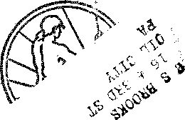
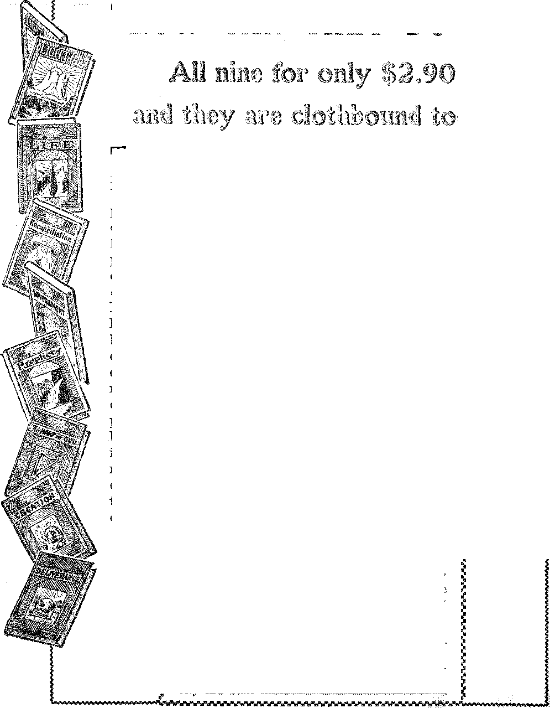

A JOURNAL OF FACT HOPE AND COURAGE
in this issue
CONSIDER THE HEAVENS
NO MORE VACCINATION
CENSORSHIP IN OPERATION
ASTEROIDS
ELECTRICITY IN BRITAIN
"THY KINGDOM COME”
iiiiiiiiiiiiiiiiiiiiiiiiiiiiiHiiiiiiniiiiiiiiitiHiiiiiiiiiiiiiiiiiiiii
every other WEDNESDAY
five cents a copy one dollar a year Canada & Foreign 1.25
Vol. XII - No. 301
April ls 1931
CONTENTS
LABOR AND ECONOMICS
What the Children Had to Eat , 437 Poor Pay of British Railway-
Workers ........ 438
Detroit, City of Homes .... 438
Man and the Machine . . 439
Canada Feeding Her Hungry . 440
Conditions in Kentucky" . . . 440
Feeding Starving Arkansans . 440
SOCIAL AND EDUCATIONAL
Asteroids ......... 437
Chicago’s Huge Post Office . . 437
France’s Three Hundred Forts . 437
Grasshoppers Again on Move . 438
Professors Are Cleaning Up . . 438
Russia’s Huge Budgets .... 439
British Army Reduced by War
Films ......... 439
Russia May Succeed ..... 439
How the Government Spends . . 440 Decline of Mr. Hoover’s
Popularity ....... 440
Goldfish Slippers for Milady . . 447
FINANCE—COMMERCE—TRANSPORTATION
5.38 Percent of Banks Failed . 437
New Durant Sleeper Auto . . 437 Bethlehem Stockholders Seek
Bonus ......... 439
What Service Did Corporations
Render? ........ 439
1930 a Year of Surprises . . . 440
Four Great Rail Mergers . . . 440
Electricity in Britain .... 447
POLITICAL—DOMESTIC AND FOREIGN
Censorship Again in Operation . 436
Virgin Islands Get Civil
Government ....... 437
Legalized Synagogue in Spain . 438
Graft in Highway" Improvements 439
Cash Bonus to Veterans . . . 440
AGRICULTURE AND HUSBANDRY
Tomato Growers Not Overpaid . 438
SCIENCE AND INVENTION
Consider the Heavens .... 419
Goose Grease on Airplane Wings . 437
Experiments with Human Speech 438
Vitamin D Kills Mold Germs . . 439
HOME AND HEALTH
No More Vaccination in Victoria . 436
TRAVEL AND MISCELLANY
Gold Rush in Australia .... 437
Extracts from Interesting Letters 441
RELIGION AND PHILOSOPHY
“Thy Kingdom Come” ... . 442
Praying for Henry VIII’s Soul . 438
Published every other Wednesday at 117 Adams Street, Brooklyn, N. Y., U. S. A., by WOODWORTH, KNORR & MARTIN '
Copartners and Proprietors Address: ill Adams Street, Brooklyn, X 1'., U. S. A„ CLAYTON J. WOODWORTH.. Editor ROBERT J. MARTIN.. Business Manager NATHAN H. KNORR.. Secretary and Treasurer
Five Cents a Copy—$1.00 a Yeah Make Remittances to THE GOLDEN AGE
Notice to Subscribers: For your own safety, remit by postal or express money order. We do not. as a rule, send acknowledgment of a renewal or a new subscription. Renewal blank (carrying notice of expiration) is sent with the journal one month before the subscription expires. Change of address, when, requested, may be expected, to appear on address label within one month.
Translations published in Finnish, German, Norwegian, Polish, and Swedish.
. „ Offices in Other Countries
British .......... 9 s „ 34 Craven Terrace, London, W. 2, England Canadian .......... .40 Irwin Avenue, Toronto o, Ontario, Canada Australasian ....... 7 Beresford Rd., Strathfield, N. S. W., Australia South Africa ............ (5 Lelie Street, Cape Town, South Africa
Entered as second-class matter at Brooklyn, X. Y,, under the Act of March 3, 1879®
Vo’urae XII Brooklyn, N. Y., Wednesday, April 1, 1931 Number 301
Consider the Heavens
THE heavens declare the glory of God; and the firmament showeth his handiwork. Day unto day uttcreth speech, and night unto night showeth knowledge. There.is no speech nor language; their voice cannot be heard. Their line is gone out through all the earth, and their words to the end of the world. In them hath he set a tabernacle for the sun, which is as a bridegroom coming out of his chamber, and re-joiccth as a strong man to run his course. His going forth is from the end of the heavens, and his circuit unto the ends of it; and there is nothing hid from the heat thereof.—Ps. 19:1-6, R. V.
O Jehovah, our Lord, how excellent is thy name in all the earth; who hast set thy glory upon the heavens. When I consider thy heavens, the work of thy fingers, the' moon and the stars, which thou hast ordained; what is man, that thou art mindful of him?—Ps. 8:1, 3, 4, R. V. .
The mind staggers at the thought of trying to set down in cold type something of the grandeur of the universe of God as it is revealed to us on a starry night, and as it is more intimately revealed by the telescope and the various wonderful measuring instruments of our day.
And yet it is a plain duty to try to do this, periodically, for there is surely not a class of people in the world busier than the men and women who are proclaiming lie incoming of the kingdom of God upon this earth, and most of our readers have little opportunity to study the physical heavens we now’ consider.
It is a good thing that millions of people are having their attention drawn to the physical heavens by means of the planetaria, now so popular. Fifteen German cities, including Jena, Munich, Barmen. Leipsic, Mannheim and Nuremberg, now have these large round-towered buildings whose ceiling is an artificial sky. The Chicago planetarium will be the star attraction of the World Fair of 1933.
•No one has ever seen a planetarium without wishing there were one in his own community. Science has reproduced in miniature form, for study purposes, some of the grandest phenora-ena of the universe. The sun sets like the real sun. Twilight fades into night as smoothly as nature’s twilight. Hundreds of stars blink out of the darkness. In a few minutes the planets, worked by machinery, travel orbits that in reality take 20 to 30 years. In a brief hour, aided by the well-informed lecturer, the visitor obtains a good knowledge of the interdependence, orderliness and unity in the Father’s house of many mansions, the universe of God.
But thousands of our readers may never see a planetarium. We have not yet seen one, ourselves, but understand that by means of projectors the illusion of the horizon and the starry heavens is made so realistic that it is hard to believe one is not out of doors. In this article we go out of doors, very much so.
Today the ordinary people, uninformed technically, know less about the planets and the stars than did the shepherds of Palestine who made up Abraham’s army of 318 men. The crowding of hundreds of thousands into large industrial centers is largely responsible for this. The planetaria now becoming so popular will do something to offset this. Workmen, digging a cellar in Beutzow, Mecklenburg, a year or so ago, discovered an old observatory which archeologists declare dates from 1181 B. C. In this excavation a stone circle was found with markings on it showing the sun’s position throughout the year. The instruments, all of stone, were found in excellent condition, and a fair measure of solar altitude can be made with them even now.
Four centuries before Christ, without the aid of telescopes, and without any of the facilities we now have for investigation, the astronomers of Alexandria, Egypt, made such close observations and calculations that they were enabled to measure the obliquity of the ecliptic, to de-
termine the times of the equinoxes, and to detect their precession.
Two centuries before ' Christ, Hipparchus made with extraordinary exactness observations upon the courses of the sun, moon and planets, and determined the times of their revolution. Still later, Ptolemy discovered the evection of the moon, but, like his predecessors, he still thought the earth the center of everything and that the whole heavens revolve around it.
The true theory of the universe was promulgated by Copernicus in 1543. His two fundamental principles were that, instead of the diurnal motion of the heavens being real, it was only apparent, being due to the revolution of the earth on its own axis; and that the apparent revolution of the sun around the sky was, in the same way, due to the actual revolution of the earth around the sun, which latter remained at rest.
Fifty years later, with a telescope made of a piece of pipe organ, with a lens at either end, Galileo discovered the four satellites of Jupiter and proved that the Copernican theory is correct. The lenses in Galileo’s telescope were about one inch in diameter.
The inauguration of the present era of astronomical knowledge came later in the seventeenth century, when Sir Isaac Newton showed that the revolution of the planets in elliptic orbits, and the revolution of the satellites around their primaries, were all due to the mutual gravitation of these bodies, and took place according to the same laws that govern the motion of matter around us on the earth.
In 1776 William Herschel began to make telescopes much larger and more powerful than had ever been made before. In 1781 he discovered the planet Uranus. After his death his son, Sir John Herschel, continued his father’s work by means of reflectors, and in 1845 erected at Parsonstown, Ireland, a telescope that was for long one of the world’s wonders. Its mirror measured six feet in diameter.
As late as 1832 there were no observatories in the United States. The first photograph of a star was taken by the old daguerreotype process some time about 1850, at Harvard University., By 1880 photography had so developed that it could be used in astronomical work.
Today the Germans are generally considered the leaders in astronomical research, but America is forging rapidly to the front. At Mount'. Wilson, California, the largest telescope in the' world, with a reflector eight feet four inches in diameter, has just been replaced by one sixteen? feet eight inches in diameter. It is expected that' this new telescope, wThen fully installed, will settle for all time the presence of life on Mars and give us a more intimate acquaintance with... all the heavenly bodies.
Astronomers are described as ^sitting up all night and doing arithmetic all day”. No heat may quiver the air anywhere near an observa-' tory, as atmospheric steadiness is of the first consideration; hence astronomers make their observations in the cold. At the Yerkes Observatory in Wisconsin the cold becomes so intense that it is sometimes necessary to line the eyepiece with felt to prevent injury from contact with the cold metal.
This matter of the absence of heat around an observatory is of great importance, as may be-judged from the fact that at the Mount Wilson observatory the heat radiated by stars millions of miles from the earth is measured with an instrument made from the wings of a common housefly. A shred of a fly’s wings at the receiving end of a 200-inch telescope presents the maximum of contrast.
In the modern observatory the delicate instruments are kept at exactly the same temperature constantly by means of a heating coil wound around them. This is done so that the accuracy of the measurements may not be spoiled by contraction or expansion of metal parts.
The distances of the stars are measured by'' parallax. Look across a room and through window at the world without. Move the head a few inches from side to side. As you do- so the window bars seem to move to the right as you move your head to the left. The nearer you sit ■ to the window’, the more the window’ bars seem " to move across the landscape. If one can measure the apparent shift, geometry will give the distance to the point seen. ■
To imagine the heavens as they really are we would have to fancy the stars as always visible in every part of the sky. Then, by day, we should see the sun among the stars, and perhaps the<' moon also. We should find, too. that what oneh'-
seemed bewildering cbao'Sy- really runs with matchless system and order.
The bodies of the solar system are bound together by the law of gravitation,. Were it not for solar attraction each planet would cease traveling in an ellipse, but would fly off in a straight line through space. Through the attraction of the sun, all the denizens of our solar system are kept in their respective orbits.
The most convenient point at which to begin a study of our solar system is at the center of the- system, the sun, which, so the astronomers tell us, is 92,870,000 miles away. They do not ’hnow’just how far it is, but fix the distance as .somewhere between 92,860,000 and 92,880,000 miles. The mean of the two measurements is the present ‘'■'astronomical unit” by which, until recently, all stellar distances wrere measured.
The bodies of our solar system are distinguished from all other bodies in the universe by having our sun as the center of their motions. They are classified as follows: 1. The Sun. 2. The Planets. 3. The Satellites of the planets. •A. -The Comets. 5. The Meteors. 6. The Zodiacal Light. In this classification the Asteriods are a subdivision of the Planets.
The French mathematician Veronnet reported to the Academy of Sciences in Paris that among the planets of the solar system he finds equilibrium, a state in which the same things keep happening over and over without change, as the planets revolve around the sun, but that for the universe as a whole the mathematical picture is different. In other wo rds, ip his judgment, the universe as a whole is relatively young, while our solar system is relatively mature.
The visible sustainer of life is the sun. Excepting the recently discovered Millikan rays, it is, so far as science knows, the source or sustainer of all forms of energy on earth. Coal is stored-up solar energy; so is falling water; so is plant life, and animal life. All important varieties of energy used by man can be traced back to the sun. The sun is about 750 times as massive as all other bodies of the solar system put together; hence its attractive power on all these .bodies. .....
Some idea of the amount of solar energy thrown into space may be gathered from the fact that ..the energy radiated per square yard from the sun’s surface is calculated a& equivalent to 70,000 horsepower. This represents an amount of heat energy that -would. melt a globe of ice as large as our earth in two hours and forty minutes.
The sun is a globe 886,500 miles in diameter, or more than 100 times the diameter of the earth, and, therefore, more than 1,000,000 times its volume. If the sun were hollow and our earth ■were placed at its center, our moon could still revolve around our earth at its present distance of 239,000 miles, and would even then be only about half -way from the center of the sun to its outside rim, if there is a rim.
The surface of the sun is said to be hotter than the greatest heat attainable by even the electric arc. It is estimated as six thousand degrees centigrade. The surface heat of the other fixed stars ranges from three thousand to twenty thousand degrees; so it is among the cooler suns. The temperature at the center of our sun is placed at forty million degrees.
We have the proof of the heat of the sun in the fact that every drop that flows into the ocean -was lifted by it; it is in the cause of every change of climate; it provides life for every blade of grass and every leaf and flower that grows, and it does all this at a distance of 93,000,000 miles.
Every known substance of earth is vaporized before we get to 10,000 degrees Fahrenheit, and it is thus reasonable to suppose that the sun is not solid, nor liquid, but in a gaseous state. The spectroscope discloses the vapor of iron and other refractory metals in the sun’s atmosphere ; and it takes a hot fire to make iron vaporize. The temperature of the sun not only does this, but the fact that the spectral lines of iron are dark on a bright ground shows that the solar light emanates from a body yet hotter than vapor of iron.
A study of the surface of the sun show’s changes going on which are incompatible with tfib idea of solidity. It follows that the heat radiated from the surface must be continually supplied, either by the rising up of hot material from the interior, or by radiation from within outward. The material of the sun is probably transparent, and it is supposed that the enormous heat is absorbed and reradiated as we pass outward from the center.
Like the earth, the sun turns on its axis ; but unlike the earth, the central or equatorial part rotates at a different speed from that of the polar part: the former in 24.9 days, and the latter in 26.4 days, at 30 degrees latitude. The study of the rotation of the sun has been under way at Mount Wilson for twenty years.
This manner of rotation suggests an electrical generator; and it is rather significant that Dr. Ross Gunn, research physicist of the United States Naval Research Laboratory, has advanced almost that view. He thinks that electricity under a pressure of 10,000,000 volts, about the same as that of a good lightning flash, is constantly flowing from inside the sun into space, and so heats the solar atmosphere to incandescence in a manner precisely as the filament of. an electric light is heated by the electricity flowing through it. In any event, it is quite certain that what reaches us from the sun is not heat, but electricity, and is turned into heat by friction wuth the atmosphere of our earth.
Besides rotating within itself, the sun also has its own proper motion; but this motion cannot be directly observed. The only way in which it can be detected is by the relative motion of other stars, just as we know that a railway train is carrying us along when we see houses and trees seeming to pass us. There is an average tendency of our solar system to move from a point in the constellation Lyra toward the opposite region of the heavens south of Sirius.
Nobody has ever been down in the interior of the sun to find out just what it is like. In the first place the trip would be too expensive. If it were possible to speed through space at the rate of 1,000 miles an hour it would take sixteen years to make the trip.
A Princeton professor has figured out that if a man could get to the middle of the sun his refrigeration bill would cost $50,000,000 a minute to keep him alive, even if the cost of the current were only 1/1000 of a cent a kilowatt century. We have always wondered how some of these college professors spend their time, and now we know. Power Trust, please note.
We can only guess at how matter behaves at the sun, but we do know that its weight is 1.41 times that of water, and at the surface, if there is a surface, gravitation would be 27.95 times that at the surface of the earth; a woman weighing 100 pounds would weigh 2,795 pounds, and be instantly crushed by her own. weight.
The spectroscope was first used in the study of the sun in 1859, and the heliograph in 1891. As a result of the use of these instruments it is? now known beyond any question that there arc present in the sun enormous quantities of hydrogen, carbon, oxygen, sodium, calcium, iron, nickel, copper and zinc; indeed nearly all the elements found on the earth exist also in the sun, except a few of the heaviest.
As a star, the sun is about midway in the scale of brilliancy. There are some stars that give 10,‘000 times its light; the bulk of them, give less. In mass, in surface temperature, in bulk, and in speed of motion, the sun is just an ordinarily well-behaved middle-class citizen of the heavens.
Over the interior of the sun is what all see, the “photosphere”, a brilliant shining surface of white-hot gas, which is constantly boiling or surging up from below in great centers and sinking down around the areas, producing U mottled appearance like rice grains in soup. This is the surface in which the sun spots occur.
Above the photosphere is a red-hot atmosphere called the “chromosphere”, which shoots up in mountainous elevations, or erupts for one or two hundred thousand miles in monstrous spouts, clouds or plumes, shot up with lightning speed, and evidently borne aloft by the impulsive power of the sun’s rays. Such eruptions have been known to shoot out a blast of flame 330,000 miles long in one hour. ■
Above the chromosphere for a distance of 10,000,000 miles or more extends a soft, whitish light called the “corona”, which at times is uniform about the sun, and at times extends in only two or three directions. The corona seems to be composed of minute molecules of gaseous substances, extremely attenuated, like the wispy tail of a comet. Its appearance is beautifully described as “a complex glory of spaced polarrays, dark rifts, filaments, straight, curved, and interlacing, and stupendous synclinal structures with rich, nebulous mottling”.
No one can say for sure what the corona is. It may be an electric glow; it may be due to the recombination of disrupted atoms ejected from the sun at enormous speeds; or it may be some
kind of activation of loose.matter in space by waves of ultra-violet light or of X-rays or some other radiation emitted by the sun. A new wave length, in the spectra of the sun’s corona was announced as the result of observation of the solar eclipse at Niuafou Island, in the fall of 1930. '
The titanic storms that rage on the surface of the sun are the most impressive celestial phenomena observed by man. These storms are nothing but hurricanes, like those that occasionally sweep through the Caribbean Sea; but instead of speeds of a hundred miles an hour, they move much farther than that in a second. Instead of being composed of air, they are hurricanes of flaming gases.
The solar storms range in diameter from the limits of visibility up to great disturbances more than a hundred thousand miles across. In these storms masses of vaporous heated materials, sometimes hundreds of times larger than our earth, are driven about at speeds reaching into hundreds of miles a minute. They are sometimes thrown aloft for distances of half a million miles.
These great storms modify to some extent the radiation to the earth. For example, it has long been noticed that the aurora borealis or northern lights are most frequent when solar storms occur most frequently and in greatest fury. These storms accompany the phenomena of A
Sun Spots .
Sun spots were first observed by the Chinese, centuries ago. They were deemed omens of exceptional Importance, but, of course, were not understood. When Galileo first pointed his telescope at the sun and discovered that it was now and then variegated by dark spots he was considered a dangerous man, corrupting the world by finding blemishes on the sun. A sun spot seems black only by contrast with the brilliancy of the sun.
Sun spots appear to be holes in the photosphere, down which hot outer gases rush at tremendous speeds toward the interior. They are rarely seen at more than 35 to 40 degrees of solar latitude, north or south, and are comparatively scartie al; the equator. They are most numerous at about 15 degrees.
The spots are of very different sizes, ranging from the minutest point visible in the telescope to a size so great as to be perceptible to the naked eye, though the latter generally consist of several of them w’hich are close together. The largest exceed the earth in diameter, the edges being frequently jagged and cornered, as if made by a shot or bunch of shots through a tin! plate or wooden plank.
Sun spots are quite numerous at times, ili maximum times coming at regular intervals ( 11.13 years, from which they decline in numbil? ■to a periodic minimum. The years of maximum number of sun spots are 1882, 1893, 1904, 1916, 1927, and 1938. The years of minimum number of spots are 1889, 1900, 1911,1922, and 1933. In 1919 there was one spot of 50,000 by 100,000 miles, the largest yet.
It was at one time supposed that the sun-spot period of 11 years and 47 days coincides with the period of the revolution of Jupiter, but it is now proved that the period is more than six months less than that of Jupiter. In the popular mind they are often held responsible for the most impossible things. Thus, the World War and the Florida hurricane each culminated around a sun-spot maximum, and were held by some to be due to them.
That radio reception falls down appreciably during high sun-spot activity has been proved by investigations. The increased number of electrons fired from the sun during these periods ionize the upper atmosphere of the earth. Astronomers have also definitely ascertained that the following phenomena vary at the same time as the sun spots:
The feculae, or bright spots near the sun spots; the eruptions and prominences of the chromosphere; the form of the corona from partial shafts or arrowhead form with minimum spots, to a form well developed in every direction with maximum spots; auroras, or northern and southern lights; changing in the day and night fluctuations of the earth’s magnetic conditions; magnetic storms, ■which are greatest when sun spots are maximum; the earth’s average temperature, which is least when the spots are most, and varies regularly during the 11.13-year period by from .9 to 1.8 degrees Fahrenheit.
Says the Encyclopedia Britannica: “Many other terrestrial changes in rainfall, cloudiness, number of cyclones, panics, prices of foods, famines, growth of trees and even flights of insects have been seriously compared with sunspots, some, showing rather well-substantiated periodicity with the spots, and others probably with purely fanciful results/’
It seems as though to know the sun would be to know Him who is ‘wise in heart, and mighty in strength; who spreadeth out the heavens; who maketh star dusters [constellations] and the chambers of the south; who doeth great things past finding out; yea, wonders without number’. ■ —Job 9:4-10.
There are some advantages in studying astronomy at the equator that do not apply at other portions of the earth. Let us imagine two persons, one at the north pole and the other at the south pole. There are two nights in each year when the days and the nights are of equal length at every point on the earth’s surface. Those nights are approximately March 21 and September 21, On the night of March 21 those two men are looking at a certain section of the heavens, each at a different part. On the night of September 21 they are looking at portions of the heavens which could not be seen by them on March 21 because of the bright light of the sun. Again they are each looking at different stars.
The inhabitants of the north polar regions and those of the south polar regions never see the same stars. But the man on the equator, by remaining up all night on those two nights, can see all the stars the heavens contain that are visible to residents of our earth. Astronomers make frequent trips to the Andes observatories because of this fact.
To one standing on the equator, or elsewhere at a distance from the poles, the stars seem to rise four minutes earlier each night than the night previous, so that in six months all the stars that were seen, on a given night have dropped below the horizon and are no longer visible.
This gain of four minutes each, day throughout the year brings back into visibility by the end of the year the stars that were visible the year previous. Thus the sun appears to rise 365 times each year while the stars appear to rise 366 times. This appearance is due to the actual revolution of the earth around the sun.
Standing on the equator and looking toward the north, the observer will see the north pole star just at the horizon; looking toward the
Bbooklim, N. X.
south he will see no such star, but will note that “the chambers of the south” (Job 9: 9) are relatively empty, as compared with “the sides of the north” (Isa. 14:13), within which are located ‘the gravitational forces of the star clusters [cimah (Hebrew), constellations]’ (Job 38:31), the abode of Him who “stretcheth out the north over the empty place, and hangeth the earth upon nothing-”. (Job 26:7) Who taught the Prophet Job astronomy?
We Jump to the Moon
From considering the sun at some length we now jump to the moon, Luna, but not in the same manner as the acrobatic bovine of childhood’s days made the trip. Ours is made mentally. It is quite a trip. If we flew by airplane at 100 miles an hour it would take us 99 days and .1.4 hours to: go one way, 239,000 miles.
The actual color of the moon is not white, but the dull brown of weathered rocks. The apparent silvery whiteness of moonlight is due to contrast with the darkened sky. Its diameter, 2,163 miles, is a little more than a quarter of that of the earth.
The moon gives out no light of its own: all the light that comes to us from its surface is reflected sunlight. This light in some places is so clear that some can see to read by it; and yet it is claimed that if the entire sky were paved with moons they would not yield over one-eighth as much light as is derived from the sun.
The surface of the moon is one-thirteenth that of the earth, and the portion that we can see when the moon is full is about twice the area of Europe. If the earth were cut into forty-nine pieces, all equally large, one of these pw-epc rolled into a globe would equal the size of the moon; but it would be much heavier, because the earth is more dense.
We always see the same side of the moon, because it makes one revolution on its axis at the same time that it performs a revolution around the earth. This surface which we see so constantly has been mapped by astronomers so carefully that we have better maps of it than we 'have of Africa. .
To understand the relative positions and movements of the sun, moon and; earth, -place:: a light on a table in the center of the room. Thu light is the sun. Stand a few feet from it. You are the earth. Stretch out your arm with an apple in your hand. The apple is the moon. Turn your apple straight toward the light: the moon is dark. Turn a quarter to the left: you see the light shining on one-fourth of the apple; the moon is in the first quarter. Turn with your back to the light, and your apple still extended straight in front of you: the light shines full on the apple; the moon is full. Turn another quarter-way around: your moon is in the third quarter. Turn the- remaining quarter, and you have completed one lunar day. The moon has shown all its sides to the sun; additionally, it has gone clear around the-earth.
For innately or unfortunately your body is .not arranged in such a way that you can hold the apple at a certain distance from you and in a certain direction from the light and at the same time spin around on your heels. Hence you cannot very well illustrate the fact that the earth turned about on its axis nearly thirty times while the hinar day aforementioned was in progress. The "man in the moon” must think us very restless indeed.
To carry the picture still further, you have to imagine yourself traveling around the table in your iko’l a t the same time that you are spinning around on your heels and meantime turning the apple slowly about you once every time you have spun thirty times on your heels. You manage to get around the table while you are taking about 365 spins.
.....Moreover, your path about the lamp would be, not a true circle, but an ellipse. Besides that, you would not stand straight up, but would be bent over slightly, and in addition you would wobble some, which would not be strange under the circumstances. And then, in fact, you would have to imagine the whole room, lamp and all, rushing at tremendous speeds in at least three directions, ahead, to right or left, and up and down. But we are ahead of our story. Let us get. back to the moon.
---•The eyebrow of our old friend who smiles at us every night is 280 miles in breadth and 354 miles in length. And, by the way, did you know that at any time after the first quarter a most beautiful woman’s face can be discerned, not so large as the .man’s, face, and situated so that the back of her head is at the back of his? If you have never seen the woman in the moon, look for her, and be rewarded.
The features of the man in the moon are really great mountain chains, plateaus and volcanoes. Huygens, the highest mountain on the moon, is 18,000 feet high. This would be a high mountain even on the earth. Tycho, the great volcano, has a crater fifty-four miles in diameter and 16.600 feet deep. The hill about this volcano is nearly a mile high. <-:--
All the moon’s craters are named, and thousands of astronomers have pondered and dis? cussed their origin. Some hold to the meteoric bombardment theory. At Mount Wilson observatory a committee is now studying the moon, not by looking at it through a great telescope, but by throwing lantern slides on a man-made globe and then studying the globe.
Widely separated tribes, from the Eskimos to the aborigines of the South Seas, have their legends about the man in the moon. The Malays, for instance, believe that the marks on the moon represent a banyan tree under which a hunchback is sitting, plaiting a fish line. When the job is finished he will fish up everything on the earth: but he is out of luck, for a rat is constantly gnawing away the line, so that it is never completed. -
Astronomers are divided as to whether there can possibly be life of any kind on the moon. Most of them insist that no life is possible because, say they, there is no atmosphere, no moisture of any kind. They judge this to be the case because the edges of the moon are always clear and sharp, and because it has been photographed thousands of times. The moon is near enough that if there were storm clouds sweeping over its surface they would be visible under the high-power telescopes now in use.
Another reason why, it is claimed, no life could exist on the moon is that its surface is subjected to such extremes of alternate heat and cold. The actual time from one new moon to another is 29 days, 12 hours, 44 minutes and 3 seconds. On the moon, half of this is night and half of it is day.
During the lunar day the temperature would approach that of boiling water, and for the other fourteen days it would be subjected to the intense cold of interstellar space. The instant the sun went down a man would freeze solid. The temperature of the moon during the darkest part of an eclipse has been shown to be 190 de-
grees below zero. What would it be after only one week of total darkness? ...
The absence of atmosphere on the moon is indicated by the fact that at the time of an eclipse of the sun the moon’s limb is perfectly dark and sharp, with no apparent distortion of the sun due to refraction. Similarly, when a star is occulted by the moon it disappears suddenly and not somewhat gradually, as it would if its light were being more and more extinguished by an atmosphere.
If there is no moisture on the moon, no atmosphere, then its surface during the lunar day is subjected to the heat of the sun’s full rays without any interception; and the astronomers who hold to the no-life theory claim that the violent alternations of heat and cold which such conditions would bring about are enough to account for the phenomena which another prominent astronomer drew to the attention of his fellows some years ago.
This gentleman, studying the moon in Jamaica, where it is especially suitable to study it, and with a large lens provided by Harvard University, claims that while there is no general atmosphere on the moon, there are patches of atmosphere surviving within the great craters; that steam has been observed issuing from one of the craters; that snowstorms have been observed revolving within the craters of the volcanoes, and that in these craters he has observed crops of some sort grow, develop, mature, wither, and later come again to life.
He claims that these crops are two for each period of the moon’s intensely hot day: and he may be right. He tells of the changes of color just as might be expected in. growing and maturing crops, and reproaches his fellow astronomers for not having studied these craters with sufficient care.
All astronomers are forced to admit that craters on the moon have been seen to grow larger and then much smaller, and then to be obscured from sight altogether, only to reappear; also that small craters have been seen to appear which were not there befoi thus giving evidence that the moon is not so totally dead as some have supposed.
Those who disbelieve in the possibility of moon life suppose that the 'white patches which now and then obscure portions of the moon’s surface are clouds of gas which issue from volcanoes in eruption, and they believe that the alternate expansion and contraction caused by intense heat and intense cold are sufficient causes for the volcanoes; others think that these ‘wavy shadows’, as they prefer to call them, are the result of radiation from the superheated soil and deceive the eye. It can be almost surely predieted that there is no animal life on the moon: if is not believed that such life could survive the alternate waves of great heat and great cold.
It is claimed that gravitation on the moon is only one-sixth as great as it is on our earth; and that hence if there were humans there they would have to be light-steppers indeed, as a man putting his foot down violently would have no trouble in sailing easily over the top of a house.
The distance to the moon is measured by observing simultaneously the angle to a given point on the moon from two widely separated points on the earth’s surface. The triangle thus formed is solved by the aid of trigonometry,
February, 1866, had the unique distinction of being the only month so far in the history of the ■ human family in which there was no full moon. That same year, January and March had two full moons each. This will not happen again for 2,500,000 years, so it is claimed.
Old-time gardeners used to say that seed should be planted in the full of the moon, if it is to germinate quickly. Afterwards they were laughed at. Now science has discovered that a large percentage of the light we receive from the moon is polarized and that it does have a marked effect on plant life. The word “lunatic” testifies to the early belief of the influence of the moon upon the human mind. The w’ord means, lite raby, ‘One who is moon struck.’
The pull of the moon shifts the earth’s crust enough that the variation of latitude may amount. to as much as six feet. So finds Dr. Harlin T. Stetson of the American Astronomical Society.
Herbert Janvin Brownie, consulting meteorologist, Washington, D. C., attributes the drought of last year to the moon, working through its tidal attraction on the ocean. During recent months the relative position of earth and moon in space have swung the moon farther to the north of the earth’s equator than usual, while the moon has also been relatively nearer the earth.
The tides ebb and flow in endless surges, due to the lifting power of the moon acting on the millions of miles of the ocean’s great surface. The tidal influence is such that in a lake 200 miles across the tide will rise half an inch on the edge nearest to the moon.
It is claimed that muslins dried by the gentler and polarized light of the moon can be preserved white as snow, but if dried in the brighter, hotter light of the sun they would in time turn yellow.
' In its orbit the moon travels at an average rate of 2,287 miles an hour. Its path is calculated for. the nautical almanacs years ahead. It speeds up and slows down every month as it swings around our earth, and then it does some other things which the astronomers cannot just account for and which they are trying to explain. The moon is slightly out of its predicted course, and is also twelve miles ahead of its calculated position in that course.
The fact that the moon does not perfectly follow the path calculated for it has been known for forty or fifty years. In the first few years of this period the moon gained only half a mile, when the speeding up became accelerated. Astronomers say that some unknown forces, possibly magnetic, are tugging the moon forward and pulling it out of its path.
Having’ considered at some length the moon that we know most about, it, is now in order to consider a type of heavenly body in which we humans happen to have a special interest at just this time. We live on a planet, and we should consider the planets next, once called "wandering stars”.
The only planets we know anything about are those of our own solar system. If there are planets around the stars of other solar systems, and astronomers have certain theories which make that seem probable, no telescope that man can make will ever bring them within view7.
Tim vlamns are opaque and are visible to us only by reflecting the light of the sun. When in opposite direction from, the sun the planets are best observed, because they are then nearest the
earth, and their visible hemisphere is fully illuminated. ■ : :
Our solar system seems to be divided into two general parts: the four planets Mercury, Venus, Earth and Mars, which lie nearest the sun; and the five planets Jupiter, Saturn, Uranus, Neptune and Pluto, which are more remote.
The innermost planet of the solar system is Mercury, 35,000,000 miles from the sun, with a solar year of eighty-eight days. Mercury appears in form much like the moon, but its diameter is 3,000 miles as against 2,000 for our moon. Mercury has no moon of its own.
The planet is so near the sun, and hence glitters so brightly, that it is difficult for observers to distinguish any of its dominant features. It is known, however, that Mercury is the densest of the planets, and that it has a very dense atmosphere with water in it.
Mercury is named after The god of trade, the messenger of the other heathen deities’. It is believed to turn on its axis in the same time that it revolves around the sun, so that the same side is always turned to the sun. If this is true the temperature of that side is far above the boiling point (hot enough to melt lead), while the other side is plunged in eternal night at a temperature of 200 to 300 degrees below freezing.
The second planet away from the sun is Venus, 66,000,000 miles away, almost exactly the same size as the earth. It completes its circuit about the sun in 224 days and is so brilliant that it may sometimes be seen in midday. Venus has no moon of its own. Its surface is always swathedin clouds. It is brighter than Jupiter, although Jupiter is vastly larger and gives out some light of its own besides reflected sunlight.
Venus is named after the 'goddess of beauty and love’. She has an atmosphere probably about twice the density of our ovm, and the prevailing temperatures would be tropical but for the screen of clouds always interposed between it and the sun. There is no reason to suppose that the composition of Venus differs from that of the earth, and so far as we know, plant and animal life as we know it may well exist [••ere.
The light and heat which. Venus receives' froitt7’ the sun are 1.91 times as great as the earth' receives on an equal surface. The cloud of watery vaporf like the cloud suspended above the earth pribh«tblOab?s7'day, is formed at a height far ’ exceeding the highest cloud levels on the earth. This cloudy envelope prevents any view of the actual surface.
It will be very apparent to readers of Judge Rutherford’s book Creation that the present condition of Venus is about what the earth was prior to the Flood, and it is significant that some astronomers have advanced the idea that animals like the dinosaurs that once roamed this planet are now finding Venus a happy place in which to live.
The third planet away from the sun is the one upon which we were born. The object of its creation is told us. “For thus saith the Lord that created the heavens; God himself that formed the earth and made it; he hath established it [it is a permanent feature of the heavens], he created it not in vain [not to be destroyed, as some vainly suppose], he formed it to be inhabited.”—Isa. 45:18.
Those who imagine that our earth is some day to be burned up with literal fire should take a trip across the ocean. It would amply convince them that if by accident the fire got started the Almighty has plenty of water at hand with which to put out the flames. Four-fifths of the earth’s surface is covered with water, the average depth of which is two miles. That is a lot of water. “Seeing is believing.”
The land surface averages less than half a mile in height above the sea level. The deepest water is in the Pacific Ocean, in the Mindanao Deep, north of the Philippines, where it has been measured to a depth of 35,410 feet. The highest mountain peaks are :In Asia,MountEverest, with an altitude of 29,002 feet; in Europe, Mount Elbrus, 18,526 feet; in Africa, Kilimanjaro, 19,720 feet; in South America, Aconcagua, 22,868 feet; in North America, McKinley, 20,300 feet.
The earth is a good place for man: no better place could be devised. It is a vast storehouse of good things for his development, entertainment, comfort and luxury; and in another century or so it will begin to show itself everywhere as the paradise which it is ultimately to become. Forty percent of its peoples at present are of Caucasian origin, forty percent Mongolian, twelve percent Negro, and the remainder are Malays and North American Indians.
The average velocity of the earth in its orbit is eighteen and one-half miles a second. It moves more slowly in July than in January. It makes a complete rotation on its axis in 23 hours and 56 minutes; but because it is moving around the sun in the same direction as it rotates upon its axis the length of the solar day is about four minutes more than the length of rotation
The difference in centrifugal force at the equator and at the poles is such that a man who would wreigh 200 pounds at the equator wmuld wTeigh 201 pounds if weighed on the same scales at the poles. The aurora borealis is- a phenomenon of earth’s atmosphere’. With, a height averaging sixty miles, and few rays ever exceeding one hundred miles in height, it shows the limits of our atmosphere.
Men have traveled on the surface of the earth, through it in tunnels, and bored down into it in mines; they have traveled on the water in boats, through the water in submarines, and under water in tubes. They are now flying through the atmosphere, and have even proposed to send a rocket to the moon. Man is certainly making himself at home in the home in which he finds himself.
The earth is the nearest to the sun of any planet provided with a moon, and it is the only one whose temperature seems entirely suited to life of the kind we know. The earth is nearest the sun in early January. From that time on it recedes about 17,000 miles a day. During the summer the sun is more nearly overhead, so its rays are more concentrated; and it is this concentration that produces heat.
At present, so the astronomers tell us, the earth is running ahead of its schedule a fraction of a second a day, and hence is not quite so reliable as a timepiece as it was wont to be. But don’t let this make any difference in your confidence in your alarm clock.
The first photograph actually showing the curvature of the earth was recently exhibited in Cleveland. This photograph, taken in South America, of mountains 320 miles from the camera shows the mountain range in a straight horizontal line, but one section where there were no mountains was shown bending slightly downward at one end, resembling the photographs of the curving edge of the moon.
Most well-informed people, if asked how many planets there are in our solar system, would answer glibly, ‘Nine: Mercury, Venus, Earth, Mars, Jupiter. Saturn, Uranus, Neptune, and Piute.’ Very good, as far as it goes;
But the right answer would be that instead of nine planets in our solar system the best estimates are that there are 80,000, ranging from Jupiter, 87,000 miles in diameter, down to rocks 10 miles in diameter, all flying about the sun with as much dignity as Jupiter himself.
These minor planets, of which Ceres, 485 miles in diameter, is the largest, and Eros, 15 miles in diameter, the most important, are located principally in a belt between Mars and Jupiter and make their journey around the sun in an average revolution of four and one-half years. Eros is located between Earth and Mars.
Eros was discovered by Witt, of Berlin, August 13,1898. It is the most valuable and useful of the family of 1,100 asteriods because it comes nearer to the earth than any other heavenly body except the moon. Until May, 1931, it is out here only a little matter of 16,700,000 miles. Traveling toward it at the rate of 100 miles an hour it would take us only 19 years 23 days 8 hours to make a landing; and that is very, very close, astronomically speaking.
Owing to the fact that Eros comes so close to the earth, it is pulled out of its elliptic path by the earth’s attraction. By carefully measuring the amount of this deviation astronomers can compute the weight of the earth more accurately than it can be estimated by other methods.
When the first four asteroids were discovered, 'January 1, 1801, the hypothesis was advanced that they were parts of an exploded planet. This view is no longer held. They are now considered as the pygmies of the solar system, the Weepings’, one might say, ‘left over after the planets had been formed.’ One of the asteriods, discovered in March, 1920, bears the name of President Hoover.
The first planet whose orbit is exterior to that of the earth is Mars, a mean of 141,500,000 miles from the sun, but at times approaching as near as 33,000,000 miles to the earth. It takes Mars 687 days to make his circuit of the sun. He has two moons, Deimos, ten miles in diameter, and Phobos, thirty-six miles in diameter, the inner one ot‘ which, Phobos, travels around the planet in seven hours and thirty-nine minutes, or about three times a day, while Deimos makes the circuit in thirty hours eighteen, minutes. One of these moons rises in the east and the other in the west.
We know more about Mars than we can ever know' of the other planets. We are able to see all sides of it and to study and map both poles, v’hile some parts of the earth no human eye has ever seen. The diameter of Mars is about 4,200 miles. Mars is named after the heathen ‘god of war’.
A day on Mars is only a little longer than one on earth, but the Martian year is about twenty-three of our months, or nearly equal to two of our years. Its surface gravity is only about one-third of that of our planet. Spring, summer, autumn and winter succeed one another as with us, but the seasons are each twice as long.
Like the earth, Mars has water and an atmosphere; but unlike the earth, moon, and other planets, its surface is very smooth. Observations indicate that there are times when the surface of Mars is swept by winds which attain a velocity of 230 miles an hour. The temperature is chilly. The orbit of Mars is the most eccentric of the solar system, the greatest distance of the planet from the sun exceeding its least distance by 26,400,000 miles.
Mars is not exactly circular in form, being gibbous to the extent of one-eighth of its diameter. There are white spots at the poles of rotation, supposed to consist of snow; and when summer time comes in the northern hemisphere of Mars, the white spot about that pole dwindles considerably in extent, and in some of its summer seasons it disappears entirely. The periodical recession and advance of the Martian ice cap v,Tas accurately photographed many years ago.
The air of Mars contains less than one-third less oxygen than is found at the top of Mount Everest. The temperature at the equator is about sixty degrees above zero at noon, and around ninety degrees below zero at night. Somebody suggests that if there are any Martians they would have to have enormous lungs and should have coats of fur, detachable at ’will, to meet these changes in temperature.
Besides the polar ice caps the remaining areas of Mars are of two sorts, grayish and ruddy. The grayish areas were once supposed to be seas, but are now regarded as marshes covered with some sort of vegetation. These areas change their color and intensity with the seasons, very much as our vegetation would appear to do if viewed from a celestial neighbor.
And then there are ruddy areas, large in extent, so large as to give the planet a very reddish color, suggesting blood. These reddish areas are thought to be great sand plains. Across them are certain fine, dark, straight markings, first discerned in 1666, and supposed by some to be canals. If they are canals the digging of them by human, creatures would not be very difficult, as the density of Mars is not very great. Modern astronomers lean away from the thought that these are canals, and some even deny their existence. '
The king of the planets, Jupiter, named after the chiefest of the heathen deities, is a planetary system in himself. He has four principal moons: Io, Europa, Ganymede and Callisto, which revolve about him in periods of two to seventeen days; and five secondary moons, unnamed, two of which are fifteen million miles away from him and get around him only about once in two years.
The four first named were discovered by Galileo, in 1610, and are sometimes referred to as Galilean stars. They are very large objects, their diameters ranging from 2,100 to 3,550 miles. The largest of them thus exceeds Mercury and approaches closely to Mars in size.
Jupiter is the largest planet of the solar system. Its mean diameter is about 86,500 miles; its mean distance from the sun, 483,300,000 miles. The inclination of its axis is 3° 5' 30", so that changes in the seasons must be almost unknown. It spins at the rate of 28,000 miles an hour. If the earth traveled at that rate our day would be less than an hour long.
A Jovian year is about the length of twelve of our years; for it takes Jupiter 11 years and 314 days of our time to make its circuit of the sun. Its path is that of a vast ellipse, with the sun just off the center of the circle.
The disk of Jupiter is crossed in a direction parallel to the equator by three or four vividly marked bands or belts. Others of these belts vary in density and distinctness. They are assumed to be some sort of vapor of considerable density, perhaps helium.
South of the equator there is a great red spot which has been visible for about ninety years. In the year 191.9 this great red spot and its immediate surroundings underwent some surprising changes. The bay or hollow in which it was
Ckooki.tn, K.
located disappeared, and the spot itself was almost obliterated. Two years later the spot reappeared, was well defined and of abnormal length, but had lost its color. Perhaps the phenomenon maybe explained as a gigantic volcanic eruption.
Jupiter is only one-fourth as dense as the earth. It bulges greatly at the equator, due to its rapid revolution upon its axis. At the equator this is reckoned as more than five minutes faster in each ten-hour revolution than it is in the temperate zones.
It is a long jump from Mars to Jupiter, but it is almost as far from Jupiter to the next planet, Saturn, as it would be all the way back from Jupitei’ to the sun. Saturn is 870,000,000 from the sun. It takes it 29 years and 167 days to make its circuit about the sun. Saturn is 70,000 miles in diameter, is very hot, and is so light that it could float in water. It is named after the heathen 'god of agriculture’......
Saturn has encircling it three bright rings and an inner dusky ring through which the body ofc the planet can be seen. The rings render Saturn a beautiful and striking telescopic object. They are about 173,000 miles in external diameter. The central opening of the ring is about 1.11,000 miles. This makes the breadth of the ring itself, from its inner to its outer circumference, about 31,000 miles, or more than four times the diameter of the earth.
Although Saturn is not quite so large as Jupiter, its grand array of rings and satellites renders it the most stupendous object in the solar system., outside of the sun itself. To the naked eye, when near opposition, it shines as a bright star of the first magnitude. Its light is somewhat yellow, bearing a great resemblance to that of Arcturus, both in color and in brightness. It is supposed to rotate at a speed of about 10,000 miles an hour.
The present condition of Saturn illustrates the method used in the creation of the earth. One after another the rings surrounding the earth have come down, the last of which came down in Noah’s day in the form of a flood of waters.
Saturn has ten moons, situated outside" tile rings: Mimas, Enceladus, Tethys, Dione, Rhea, Titan, Themis, Hyperion, Iapetus and Photbe. Iapetus is about the same size as our moon, while Titan is one and one-half times as large.
Saturn thus has more satellites than surround any other planet.
The planet Uranus is 1,782,800,000 miles from the sun, a little more than twice as far from that body as its nearer neighbor Saturn. It is 31,000 miles in diameter and travels about the sun in 84 years and 7 days. It has four moons: Ariel, Umbriel, Titania and Oberon. It was discovered in 1781 by the astronomer Herschel. The planet is barely visible to the naked eye. It probably rotates about 10,000 miles an hour. Uranus is the name of a heathen deity supposed to personify heaven itself.
The discovery of Neptune in 1846 was one of the most marvelous ever made by man. The discovery of no other planet has ever so surprised the scientific world as did the accidental finding of Uranus by Herschel. Neptune was captured in a mathematician’s net.
A young Frenchman named Leverrier found that Uranus was moving in its orbit in . a way that indicated the disturbing influence of a planet still farther from the sun. His calculation showed him just where the new planet ought to be, and there it was found when a telescope was directed to the spot.
Neptune is 2,795,998,000 miles from the sun. It has one moon, unnamed. Like Uranus it is supposed to rotate about 10,000 miles an hour on its axis. It is inclined 43 degrees on its axis. Neptune is named after the heathen "god of the sea.’
It is about 36,000 miles in diameter. Its year is equal to 164 years and 280 days of our time. It requires four hours for the light of the sun to reach the surface of Neptune. The nearest -fixed star is many thousands of times farther distant.
In history 1930 will stand out as the year of the discovery of the new planet, Pluto, named after the heathen ’god of darkness’. The star was found at Lowell Observatory, Flagstaff, Arizona, in January last, after having been predicted fifteen years ago by Percival Lowell. Like Neptune, it was a mathematical discovery.
After Pluto had been located an examination of photographic plates made at Mount Wilson Observatory in 1919 revealed the location again and confirmed the discovery. An Italian, Ben-dandi, claims the discovery of three other new planets by similar methods.
Pluto is of about the size of Mars, and is yellowish in color, very different from the blue planets Uranus and Neptune. Dr. Harlow Shapley, director of Harvard College Observatory, has calculated that it requires Pluto 251 years to complete its orbit around the sun. This is nearly a century longer than for Neptune.
A lunar eclipse is caused by the revolution of the moon about the earth placing it, at calculable intervals, on the opposite side of the earth from the sun, so that the earth’s shadow falls on the moon. As the moon is visible on earth only by reason of reflected light from the sun, the earth’s shadow falls on the moon and it becomes, at these periods, partly or totally invisible. There cannot be more than three eclipses of the moon in one year, and in some years it is possible for the moon to miss the earth’s shadow.
A solar eclipse is due to the moon’s revolving into position between the earth and the sun so that the sun’s light is cut off from the earth at some locations. Sun eclipses are visible only from rather narrow portions of earth’s territory, where moon eclipses are often visible over more than half the earth. The sun cannot undergo more than five eclipses in one year, and it is impossible to go a whole year without at least two being visible at some place on the earth.
An eclipse of the sun is of importance because only then is there an opportunity to study the outermost atmosphere of the sun. The flash spectrum then obtained enables accurate data to be gathered as to the thickness and relative heights of the chromosphere and corona.
Today astronomers can foretell to the second eclipses for any part of the globe, can foretell how long they will last, whether they will be complete or partial, and just where the borderline will be. In an eclipse which passed over New York city they determined in advance just the street where the line of totality would occur.
No obstacles are formidable enough to stop astronomers from pursuing eclipses. They take their instruments to the most remote corners of the world. One of the latest and most costly expeditions was to the lonely island of Niuaf ou, near Fiji, in the South Pacific, in the fall of 1930. Niuafou is merely a circular ring in the Tonga group, and is better known as Tin Can island. It .was noted that the eclipse there oh-, served interfered with radio communications over the Pacific on that day.
The Heavenly Itinerants
There are two classes of comets: first, those which properly belong to our solar system and which return to perihelion (pass around the sun) in three and one-half to nine years, called Jovian comets because their outward paths extend not greatly beyond the position where Jupiter performs his revolutions; and second, there are what may be called major comets, the orbits of which show periods as large as a million years, and some of them, moving in parabolic courses, possibly never visit our sun but once. ■
However, astronomers point out that comets come to our sun uniformly from all directions and this leads them to conclude that they are all of them parts of the same original gaseous mass from which the solar system condensed, being merely those portions which were left on the outside, before the great common rotation was established, and which now occasionally drop in toward the center, and then fly back again to their original position on the outskirts of the system.
As a comet approaches the sun it grows larger and brighter, and the tail forms, sweeping into space on the side away from the sun and lengthening until it may extend 150,000,000 miles or more. Material is expelled from the main part of the comet, and is then vigorously repelled by the sun. It is revealed spectroscopically as a mixture of carbon compounds, cyanogen carbon monoxide and nitrogen. It is conjectured that the propelling force is the pressure of the sun's own light upon the minute particles of dust and the still thinner molecules of gas.
The gases of which comets are made are so attenuated that it is doubtful if any serious damage would occur even if we had a head-on collision with one. There would probably be a meteoric shower, if the collision occurred at night. We have often passed through the tails of comets, but in no case have any particular effects been observed. Stars are seen through the tails of comets with undiminished brilliance. They produce not the slightest deflections in the planets.
The word “comet” is derived from the Greek liometes, which there means “long-haired”. Nowadays, by means of large telescopes, comets
are picked up which are so faint that they caR..........
be distinguished from the stars themselves only -by their slightly fuzzy appearance. Thus we have tailless comets, and then, at the other extreme, ; ■ we have comets with as many as seven tails.
When Halley’s comet passed near the earth in 1456, on its way about the sun, it was so large.......
and seared everyone so much that the. gentleman then holding down the job of bishop of Rome ordered special prayers to protect the people......
On this special occasion the pope’s prayers were : “answered”, but they would have been “answered” just the same if he had not prayed them.
Halley’s comet visits us every 76 or 77 years.
It was here in 1910, and helped to sell a good many extra copies of the New York Journal and other like papers. It will be due again about 1986. Meantime two to a dozen small comets are picked up annually. The great astronomer Kep- 1 ler made the statement that the heavens are as full of comets as the seas are full of fish. The revolutions of some of them probably require thousands of years. -
Twenty Million Meteors a Day
A few meteors may be seen on any clear night, and the number entering the earth’s atmosphere every twenty-four hours has been estimated at twenty million a day. The estimate of one astronomer, Professor Newton, is fifteen million. Most of them are so minute that the moment
they strike the atmosphere they are burned and if they ever reach the earth at all it is in the form of impalpable dust. -
Astronomers see many more meteors than are ever discerned by the natural eye. They tell us that some of the natural light of the sky arises from the reflection of the sun upon them while they are still out in interplanetary space. The comets are probably made up of meteors.
December 5, 1928, the New York Times said, “There are probably about one billion shooting stars shrieking daily through the earth’s atmosphere.” On May 11,1930, a little less than eighteen months later, the same journal said: “It has been estimated that over the whole surface of the earth there are probably an average of some: 20,000,000 of these objects entering the atmosphere every twenty-four hours.” One of these estimates is fifty times the other. The usual estimate is twenty million.
The Supreme Court of Iowa has decided that a meteorite becomes a part of the soil into which it, falls and is imbedded, and is therefore the property of the owner of the soil. Probably if one hit a man in the hack of the neck it would bekmg to him after he cut it out. But the Iowa argument was over the ownership of one weighting-sixty-six pounds, and if one of that size hits you in the back of the neck there will be no argument as to whether you own it or not. The German government claims all meteors as government property.
In the .Middle Ages meteorites were collected and have been objects of veneration or worship in many parts of the world. August is the best month to see them in the sky. The place chosen for observation should be remote from the lights of any great city.
. At one time some held that meteors originated in volcanic eruptions, but it is now known that this view is incorrect. Their velocity has several times been figured at twenty-six miles a second. This is the velocity which a body would acquire in falling toward our sun from an infinitely great distance away, and proves that each meteor was pursuing its own independent orbit about the sun before it suffered collision with .the earth.
About a hundred meteor swarms have now been recognized, and at least half a dozen of these have been proven to travel in the paths of comets. In 1833, and again in 1866, there were showers in which the meteors, like the flakes of a snowstorm, were so plentiful that the whole heavens were lighted by them.
Our br. views of meteors are when they are traveling in the same general direction as the earth. When we are speeding toward them at 18.6 miles per second and they are coming toward us at 26 miles per second they are usually burned to nothing the instant they strike the atmosphere; the speed of contact is then about 45 miles per second. When they are traveling in our general direction the speed of contact is only about eight miles per second, and some of these get down to the ground .without being totally destroyed by their contact with the air. Even then they frequently explode and only tiny pieces of the original boulder are ever to be found.
More than 90 percent of the composition of meteors is iron, but cobalt, silicon, sulphur, nickel, phosphorus, arsenic, germanium, and carbon crystals have also been found. No now element has ever been found in any of them. When a portion of the surface of an iron meteorite is polished and then etched with acid peculiar markings, called, from the name of their discoverer, “Widdmannstatten figures,” make their appearance.
Some of the larger and slower meteors finally reach the earth. One fell in Thrace 466-B.C. and was rated of the size of two millstones. One which fell in Bohemia A.D. 1400 is still preserved in the town hall of Elbcgen, where it is called the ‘Bewitched Burgrave’ because, according to tradition, it represents a court official turned into iron as a punishment for his tyrannical cruelty.
A meteor which fell at Dhurmsala, India, in 1860, was found coated with ice an hour after its fall. In spite of the great heat generated by friction of the atmosphere the meteor had not had time enough to get heated through. In its interior it still retained the temperature of empty space, some hundreds of degrees below zero. ‘
At Kanth, India, in September, 1928, a meteor fell upon the keeper of the records of Kanth village, India, blowing him to pieces and making a pit in the ground 10 feet in diameter and 20 feet deep.
At L’Aigle, France, at noon, April 26, 1803, three thousand meteoric stones fell on an area nine miles long by three miles wide. In May, 1879, there was a similar shower in Iowa, in which one of the stones weighed 400 pounds. On July 19,1912, upwards of 14,000 separate stones fell at Holbrook, Arizona, the largest fragment weighing 14 pounds. At Pultusk, Poland, June 30, 1868, there was a shower of 100,000 meteors, or pieces of one.
Near Crawfordsville, Indiana, October 10, 1930, Lawrence Swank was fired on from the skies and missed by only a few inches. He supposed he had been fired on by bandits and raced for home, only to find on arrival that a meteor had passed through the hood of his car and torn jagged holes in his radiator.
For many years the 36|-ton meteorite found by Peary at Melville Bay, Greenland, and now in the American Museum of Natural History, New York, .was supposed to be the largest that ever came to us .from the skies, but one twice the size fell recently at Otjihaene, South Africa.
Still larger is the meteor which now reposes somewhere in .Meteor Crater, Coolbutte, Arizona. .An airman noticed a hole 4,000 feet in diameter, with edges raised to 150 feet above the plain and descending precipitously 600 feet to its floor. They are still looking for the meteor itself, believing it to be one of the hugest masses of iron anywhere in the earth.
The greatest meteor of all fell in the wilderness of Siberia, July 30, 1908, when 40,000 tons of iron struck the earth a blow that was felt a thousand miles away. So terrific was the impact that the solid ground heaved outward from the spot in giant ridges, like waves of the-sea. Within ten miles of the hole everything was burned to a cinder, and for thirty miles from the hole the trees that were not near enough to be burned were uprooted by the air blast and .their dead tops can now be seen pointing outward from the explosion. An area fifty miles in diameter was completely devastated.
The Zodiacal Light
The zodiacal light is a great lens-shaped cloud surrounding the sun and 'extending 'nearly to the orbit of the planet Mars. This cloud is thickest at the sun, but has a region of reversed curvature within the orbit of Mercury. It is believed to be produced by reflection of sunlight from solid or gaseous molecules that form around the sun, in the plane of its equator, a ring somewhat similar to the luminous ring of Saturn. There are astronomers who regard the zodiacal light as unreal and assert that these lights are mere refractive effects.
The Fixed Stars
The stars outside of our solar system are called fixed stars, not because they are fixed, but because they seem to us to be fixed in the same positions night after night. As a matter of fact all of the stars are in motion, some of them with very high velocities, but the annual motion of the most rapidly moving stars is less than 12 seconds. If this star were to thus continue until it made the circuit of the heavens it would take it more than 105,000 years to make the trip. There are scarcely a hundred stars of which the motions are known to exceed one second in a year. So far as knowm, each star is moving in a straight line, but there is no method by which this motion can be checked up.
The actual speed of the stars is enormous when compared wuth any that can be produced by artificial means. Thus the motion of the slowest star is believed to be at least forty times -the speed of a shot fired from the most powerful gun,
Ten years ago the number of the stars in our own universe was estimated at 375,000,000. More recently this estimate was increased to 10,000,000,000. The number visible through the telescope is estimated at about 100,000,000. The camera and photographic plate thus detect one hundred times as many as can otherwise be found.
The number of stars that can be seen by the naked eye is not more than 7,000, but as one-. ... half of these are necessarily below the horizon at any one time, it follows that not more than 3,500 can be seen at any one time. In actual practice it is unlikely that more than 3,000 can ever be seen at once by the best eye, unless at elevated points where the airis very clear down to the horizon. '
“Star Differeth from Star”
The telescope reveals that there are bluish, blue-white, green, white, yellow, orange, and red stars, and there are stars that are opaque. ' Each star gives an indication of its temperature : the red stars are red hot; the white stars are white hot. .
There are startling differences in. density.’ There are stars whose substance weighs seven tons to the cubic inch, which means that a lump as big as a baseball would weigh more than a locomotive. Then there are other stars so attenuated that it would take more than a million gallons of their contents to weigh as much as a quart of water. These statements are attrib-.....
uted to Dr. Adrian van Maanen, of Mount Wilson Observatory, California.
The stars differ enormously in their actual luminosity, i. e., in the actual amount of light which they emit. If they were all equally luminous some idea could he formed of their distance by their relative brightness, but some of the brightest stars are farthest distant. The............
spectroscope tells us that iron, calcium arid hydrogen are present throughout the universe,..........
and that no two stars are exactly alike.
The ancients divided the stars into six magnitudes. These magnitudes have now been extended to ten, and each has been subdivided into ten parts, or, for certain purposes, into. hundredths. It is noted that there are three or four times as many stars of the fourth magnitude as of the- third; three or four times as many of the fifth, as of the fourth, and so in-each magnitude.
.. The stars are scattered through the wilderness of space at distances which baffle all powers of conception. There is only one star so near us that its light would reach us in four years, and yet light travels so fast that it would go around the earth seven times in one second. The light from other stars has been on the way toward our earth for thousands of years and will not reach us for yet many thousands more.
About the year 1388 the star Nova Pictoris broke in two, and when the light from the separated portions reached our earth in 1928, 540 years afterwards, we were first apprised of an interesting event that took place more than a hundred years before Columbus sighted San Salvador. It is claimed that the two parts of this broken star are now more than eight billion miles apart. The distance of the two parts from mir little sphere is said to be 3,106,850,000,000,000,000 miles.
There are stars that change their brilliancy, now flaming up with great brilliancy, now shining with but a fraction of their former brightness. If our sun should flare up just once as some of these other suns do, we should all be volatilized instanter. There is an association of 300 men and women in 23 countries of the world that makes a hobby of observing the phenomena of the variable stars. ■
Though there are variable stars, it is noteworthy that there is no disorder. Thus light from many thousands of stars enters simultaneously into the lens of one of the great astronomical cameras, but the light from each star is brought to its own proper focus unaffected by that of any of the rest. Light is not disorderly.
It was at one time thought that the interstellar space is empty, but this is now disputed. Prof. A. S. Eddington, Cambridge scientist, expresses the opinion that half the weight of the universe is in the form of a cosmic cloud as thin as if “a single puff of smoke from a pipe we~ .tended to fill a cube ten miles in length, hreautn and height”.
From earliest times it has been customary for men to divide the heavens into certain groups of bright stars, called constellations. The names of the twelve zodiacal constellations are prehistoric. The number of constellations now recognized by astronomers is 67. There is no definite agreement as to their exact outlines.
The shapes of the constellations are entirely matters of accident. Rarely do they resemble the object for which they are named. The exceptions to the rule are the Scorpion, the Southern Cross, the Northern and Southern Crowns and the Southern Triangle.
There are eight stars in the Big Dipper. The second star from the end of the handle shows up as two stars to a keen pair of eyes. The Big Dipper, by the way, is losing its shape, owing to the fact that some of its stars are moving in a southerly direction and some in a northerli-direction, and in a few thousand years it will be all askew.
The Pleiades, commonly supposed to be a group of seven stars, are shown by photographs to consist of about 500. To fly to them, at the rate of 11,000,000 miles a minute, which is the speed of light, would take 325 years.
In about twelve thousand years from now, due to the precession of the equinoxes, the North Star will cease to be earth’s pole star, and the blue-Avhite Vega will have taken its place.
The hottest star is the big red star Aldebaran. It is computed to have a surface temperature of 80,000 degrees centigrade, as compared with 6,000 degrees centigrade, the surface temperature of our own sun, but it is two million times as far from the earth as our sun, so we do' not mind it.
The brightest of all the stars is Sirius, estimated to be at least 10,000 times as luminous as our sun. The companion of Sirius is the densest of all stars. A ton of its material -would go in a matchbox. It has a density 60,000 times that of water.
The swiftest star is Arcturus. It is thought by some to be one of the largest of the fixed stars. The greatest mass of matter is Star 27 of the Great Dog constellation. A man standing on the surface of it would weigh sixty tons. This star weighs 300 times as much as our sun.
One of the largest of the stars is Betelgucse, a. familiar star of the constellation Orion, the diameter of which is 250,(100,000 miles. Betel-guese is large enough that if it were hollow and our sun were placed inside of it, our earth could revolve about our sun as at present, and our moon could revolve around our earth, and the outside rim around us would even then be more than 30,000,000 miles thick.
Largest of all is Antares, with a diameter of 400,000,000 miles, or 380 times that of the sun. In volume it is 100,000,000 times as large as the sun, and if it were hollow all the solar system up to and including Mars would fit inside of it, with 55,000,000 miles to spare on all sides. Antares is but one of the works of God’s fingers.
All that we have written foregoing is in respect to our own universe, now believed to contain some 10,000,000,000 members. The width of this universe is so great that it would take light, traveling 186,300 miles a second, about 300,000 years to pass across it.
Entirely outside of this universe are hundreds of other stellar universes of which ours is but a single unit. These other universes, called neb-ulse, supposed for a hundred years to be stars
in process of formation, are now each, known to be groups like our own universe, and some si them may be as large and contain as many stars as our own. The spiral formation of each universe is the same, and indicates the same Architect. We live in the midst of one of these spirals, the Milky Way. •.< ..............
A group at Harvard have been studying the spiral nebulae for years. About 18,000 of these < nebulas have been measured on photographs. The ■ distances of some of these are estimated at 75,000,000 light years. It is thought there may be a million of these nebulae. One of them has been measured as traveling 8,000 miles a second.
The greatest marvel about all this is that God ' would be willing to let His only Son, His direct personal representative in the creation of all these stupendous works, come down to earth to provide the ransom price for man’s recovery out of sin and death, and that it is still His purpose to bestow upon the meek and lowly the blessings originally provided for. “Oh that men would praise the Lord for his goodness, and for his wonderful works to the children of men I” —Ps. 107:31.
No More Vaccination in Victoria
A DISPATCH from Melbourne, Australia, dated November 30, says:
“Commenting on objections made to a proposal in the Health bill now before the Legislative Council to abandon compulsory vaccination in Victoria, the Minister for Health, Mr. Beckett, declared today that it had been decided by the Ministry to abandon the provision because, owing to the operation of a clause which enables a person claiming conscientious objection to vaccination to avoid its provisions, the law in Victoria had been futile for many years. Personally, he considered that vaccination and inoculation had killed far more people than smallpox had, Methods of medical treatment were constantly changing, and it might not be long before practitioners laughed at the presentday’ preventive treatment by vaccination and inoculation.”
Censorship Again in Operation
MANY of our readers will be interested to know that the average American citizen has not sufficient intelligence to know what is fit to read and what is not, but must have this matter decided for him by somebody who wears gilt braid and brass buttons. In the last eight months four communist papers have been excluded from the mails under the provisions of the Espionage Act, which act is still in force. Many citizens of the country are hoping that
some fine day Uncle Sam will grow up, and be able to talk plain, and wear long pants, and shave and act like a regular he-man; but that will not be while the sissies of mankind are running his affairs for him. Away with the Espionage Act, and away with this silly censorship idea. For what is education, anyway? Is the case against communism so. weak .that its advocates may not be heard? '
Asteroids
npiIE Virgin Islands, taken over by the United
JL States fourteen years ago, and heretofore tstruled by the navy department, are now finally yyto have a civil government. It does not seem too soon. The navy department surrendered the government of the islands at its own request.
CHICAGO’S new post office will be 800 feet long, 350 feet wide and 200 feet high, and will contain fifty acres of floor space. Built at a cost of $21,000,000 it will have every convenience and detail for the handling of mails that human ingenuity is able to provide. _
A I THE beginning of the year 1930 there were -*■•1. 24,630 banks doing business in the United States. During the year 1,326 of them, or 5.38 percent were forced to close their doors. In other words, during the year one out of every 1S.57 banks in the country was forced to close its doors.
WESTERN Australia, in the vicinity of
Larkinville, is in the midst of a gold rush, incident upon the finding there of a single gold nugget weighing ninety-four pounds. The nugget was found fifteen inches below the surface.
milE Hudson river is still sufficiently pure that over 200 men make a living by fishing in its waters, but the Delaware and the Ohio have become so contaminated that fish cannot live in them. The great dam of the Power Trust at Conowingo, Md., keeps all the fish out of the Susquehanna river.
WITNESSING the movie scenes made at
Hollywood, one hardly realizes that in the last five years 55 of these actors lost their lives, while the huge total of 10,739 were injured. There is an average of 15 accidents a day sufficiently serious to be reported to the state industrial accident commission.
THE French are not taking any more chances TIT HEN the Creator designed a goose He did of the Germans’ invading their country. At ’ ’ not intend that this creature should get
distances of one kilometer apart they have built or are building three hundred fortresses of iron, steel and concrete, all interconnected with telephones, and believed to render the boundary line impregnable on ground.
Henry Ford is alleged to have said that he never makes any important decision without acting upon the advice of his inner voice that tells him just what to do. In the same direction, the clergy of England are flocking to London to discuss the phenomena of spiritism. All are headed for the ditch together, Henry and all.
NEXT month,” says The Vegetarian and Fruitarian, “we shall resume a series of articles on aluminum, beginning with a copy from The Golden A ge, that fearless publication that never shrinks from publishing the truth, showing how the Government backs aluminum and Mellon interests.” And to this we say, Thanks awfully! cold easily. Our grandmothers thought goose grease one of the best cures for a cold. Now engineers have discovered that if the sides and top of an airplane are painted with goose grease the snow and ice do not adhere to it.
AN INVESTIGATOR of conditions in Kentucky . visited three schools and examined the lunch baskets of forty-five children. Three of them had pieces of raw cabbage only. The other baskets contained hickory nuts and walnuts, and nothing else. Forward, America! Nothing can stop us! Maybe!
THE Durant 1931 four-cylinder oi’ six-cylinder sedan may be converted into a perfect roadside resting or sleeping room by pressure on a lever under the front seat. The only thing strange about this is that some enterprising automobile maker did not think of this and put. it in operation long ago.
Some Developments Owed to Bootleggers
H H. Sheldon, professor of physics in New
•York University, attributes the development of fast motor trucks to the bootleggers. As a result of their demands the slow, hard-tired trucks have been practically taken off the highways. The bootleggers have also been responsible for greatly increasing the speed of boats used in coastal waters.
Poor Pay of British Railway Workers
THERE are 100,000 British railway workers who receive less than $12.50 a week. They are now faced with the demand that $1.50 be cut from this wage, that overtime be paid at instead of 1| rate, that men regularly assigned to Sunday work be not paid extra for it, and that minimum wages be reduced from $9.72 to $9.23.
Detroit, City of Homes
IN DETROIT, the city of homes, where much property was bought on easy payment plans during periods of so-called “prosperity”, the homes are being lost by foreclosure at the rate of 1,500 a month. When conditions are such that the workers dare not hope to own their own homes the outlook for capital is very, very bad. What does a homeless voter care about the stability of capital?
GraBBhoppers Again on Move
THE grasshoppers that have devastated north
ern Africa for the past three years are again on the move, having started in the extreme western part of French West Africa. Some of the grasshopper clouds are as much as thirty miles in length and six miles wide. They destroy every green thing in the line of march. They often settle on telegraph wires so thickly as to tear them from their posts.
Niagara Has 20,000 Years Yet
TpROM a study of the Great Gorge, and
■*- dilations based upon the present rate of excavation of four feet a year, we are told that in another 20,000 years Niagara will be tip to Lake Erie and Buffalo will be left high and dry on the hill. Meantime the governments will build artificial islands and so change the flow as to preserve the Falls as long as possible. ' .
Experiments with Human Speech
A T A LECTURE in Baltimore, Sergius P.
Grace, of the Bell Telephone organization, demonstrated apparatus which delays Iranian speech 4-J seconds en route to the loud-speakei1, and which turns it upside down, thus scrambling it, and which also unscrambles it by turning it right side up. He caused the flames of an arc light to serve as a loud-speaker. .
Tomato Growers Not Overpaid
TT IS estimated that 2,000,000 tons of tomatoes
are grown annually in the United States, and that the farmers who raise them get $40,000,000 for the crop. That is at the rate of 1$ a pound,.....
and, considering the prices at which tomatoes ' are sold in New York, the farmers are certainly not overpaid. A Western Canada farmer is growing tomatoes that are white instead o? red.
Professors Are Cleaning Up ■
REALIZING- that some of their number were getting as much as $10,000 a year for traveling about the country speaking on behalf of the Power Trust, the Association of American I.Trd. versity Professors has adopted a resolution providing that any member speaking in public on behalf of an organization or individual paying him a retainer fee must make public the fact that he is being paid, and who is his paymaster. ___________________—
A Legalized Synagogue in Spain
FOUR hundred and thirty-eight years after their expulsion, from Spain, the Jews have now been given legal rights again in that country. They have just been granted the right to open a synagogue in Madrid. With this step forward the Spanish government has taken one backward, having virtually suppressed the motor vehicle industry in all its branches in Spanish territory.
Praying for Henry VllPs Soul
ONCE a month, at St. George’s Chapel, "Wind
sor Castle, the choirboys still get a small rake-off for praying for Henry VlII’s soul; and considering the bad record he made, we can hardly blame the choirboys for trying to do something for him, especially if they-are ,paidb for it. However, Henry is -safe in storage until, the resurrection, and knows nothing of all that is going on. - - : - i- l
SHfiWtJP of Bethlehem Steel stockholders are trying to get back some of the $36,000,000 'which was paid out in bonuses to Eugene R. Grace, the president, and others. The stockholders seem to think that when a little item of some $36,000,000 is paid to somebody for real or imaginary services rendered it would not be any more than right to let the stockholders have a look in and at least an opportunity to say whether or not they like the arrangement.
THE New’ York Times draws our attention to the fact that Russia’s budgetary income of $15,875,000,000 seems to indicate that the Soviet Republic is an enterprise exceeding the governments of the United States, Great Britain, Germany, France and Italy combined, but that this conclusion is unwarranted because the Russian budget includes vast expenditures for activities that, in less socialized countries, are carried on and financed privately.
ApHE recent showing of war films is believed to have had much to do with reducing the
British army to 10,000 below its authorized strength. Even though faced with unemployment, British boys do not relish the idea of exposing themselves to horrors such as are illustrated in All Quiet on the Western Front. Oddly enough, they wish to live. Big Business will find it hard to understand this. And so will the big politicians and big churchmen.
TN : TEXTILE industries, one man now pro* duces as much yarn as 4,500 did in the latter part of the 18th century. In the manufacture of boots and shoes, one man and a machine replace 250 men over the same period of time; seven men replace 60 in the casting of pig iron, and two replace 128 in the loading of it; a power shovel digs and loads as much dirt as 400 men did thirty years ago; one girl using a bodystriping machine does the work of ten men at the Packard Motor Car Company works; 28 telephone girls do the work formerly done by 260; a machine makes electric bulbs two thousand times as fast as they used to he made by hand. Is it any wonder we have unemployment?
THE International Traffic and Transport Association declares that millions of dollars are annually paid by companies manufacturing highway machinery and materials, and by some contractors, to laymen serving in state offices, members of county commissions, township boards and city street committees. This huge bill is listed by the companies as overhead promotion expense, and in the end is, of course, paid by the public.
FOR the year 1928 the payments of interest and dividends to corporations were $6,028,
184,000: for 1930 they were $8,200,554,000. It is now proper to inquire what great additional service the corporations rendered the people in 1930 over the service rendered in 1928, that they should add more than 25 percent to their income in two years’ time. Anyone with half an eye can see that the interest octopus is bleeding the people to death.
EXPERIMENTS at the University of Cincin
nati have shown that Vitamin D, created artificially by ultra-violet rays, destroys fermentation, yeast molds and other foes to food. The General Foods Corporation has taken over the process and formed a new company, the General Development Laboratories, Inc. Wonder if when you eat food thus treated it will be as resistant to digestive juices and keep us all lying awake all night wondering why we ate it.
IN Commerce and Finance M’Cready Sykes says: “There are emerging in Russia vast and possibly efficient establishments prepared to supply on a large scale great quantities of the things needed by mankind, and there is more than an outside chance that within a few years Russia will be an active and powerful competitor, not merely, as now, a minor and casual one, in the markets of the world. It is conceivable that one of its results will be production of goods for the world’s needs at a less price than the world now knows. If that is to occur, we cannot defeat it, even if it were well to defeat it, merely by expressing disapproval and having nothing to do with it.”
Canada Feeding Her Hungry
CANADA is feeding her hungry, apparently not having any apprehensions such as have disturbed the satellites of Big Business in this country. One thing Canada did do, and that was to kick when some of the money set aside for the poor was used in Quebec for work on churches and religious schools. Why is it that this religious bunch never can seo the poor have anything without trying to get their hands on it?
Conditions in Clay County, Kentucky
Mrs. Mary Breckenridge, director of the
Frontier Nursing Association, writes of conditions in Clay county, Kentucky: “'I was in northern France just after the German evacuation, and went in with Miss Anne Morgan’s commission; but the economic situation was not as bad there as it is today in the Kentucky mountains. There was machinery to get food in to the population, and they were not allowed to get as close to ..starvation as our American citizens are being allowed today.”
Feeding Starving Arkansans
npiIE Red Cross allowances for feeding starv
ing Arkansans is from $2 a week up to a maximum of $4.50 a week, depending upon the............
number of children. At first glance it does look as if a country with a total annual income of $90,000,000,000 could do that much for the starving, does it not? But we have to spend so much for interest and profits that we do hate to over-........
feed our fellow Americans.
How the Government Spends
A WRITER in Commerce and Finance seems to think that when the government starts;..!, to spend it does not know where to stop. .For instance, during the World War it bought for each horse and mule about 9 halters, 5 brushes, 7 nose bags, 4 covers and 7 sets of horseshoes. For each cavalry horse it bought about 11 saddles and 7 saddlebags. For each officer enhtied to wear spurs it bought about 36 sets, and in the matter of shoes, provided about ten pairs for each man. .......
1930 a Year of Surprises
Decline of Mr. Hoover’s Popularity
Col. Leonard P. Ayres, vice president of fANE by one the idols fall from their pedes-Cleveland Trust Company, says of 1930: tals. The Manchester Guardian, referring
“The severe drouth was a surprise; the worldwide political unrest ivas unforeseen; the erratic dumping of products by Russia was not predictable. The failure of many banks in this country, which has fundamentally the soundest of all banking systems, and the strongest individual banking units, was an unexpected development. Finally, the greatest surprise of all was the discovery that business was not fundamentally sound.”
Four Great Rail Mergers '
TF NOT interfered with, the Nev7 York Central
will take over the Lackawanna and the Virginian railways; the Pennsylvania will take over the Wabash and the Norfolk & Western; the Baltimore & Ohio will take over the Reading, the Jersey Central, the Western Maryland, the Buffalo, Rochester & Pittsburg, and the Chicago & Alton; and the Chesapeake & Ohio will have the Nickel Plate, the Hocking Valley, the Erie, the Lehigh Valley, the Pere Marquette, the Chicago & Eastern Illinois, and the Wheeling & Lake Erie. All of the North and East would go into the four great groups.
to Republican defeats in last fall’s elections, said: "A third factor is the great decline in the personal popularity of Mr. Hoover, who in .1920 was the country’s greatest idol, in 1928, when he was elected, was still almost universally admired and respected, but is today under a cloud because of what many people regard as vacillation, timidity, lack of flexibility of mind, and too great subservience to the forces of entrenched wealth.” ....
Cash Bonus to Veterans
EVEN the possibility that the government would have to pay to the veterans of the World War a cash bonus of $3,400,000,000 has so scared our timid financiers that they declared, that if the plan went through the banks would have to close. Yet if the Power Trust had proposed to float that much stock, with nothing much back of it except hot air, those same great financiers would have backed the deal to the limit. When the people want something it is one thing; when the great financiers waxit it, and are to profit by it, it is quite another and a different thing.
Extracts from Interesting Letters
North Kansas City, Mo. “I heard the talk on ’The Resurrection of the Dead’ from Radio Station WHB, Kansas City, Mo., this morning, and enjoyed it. I am writing for more information about the books you spoke of in this morning’s broadcast. Have heard a lot about the Watch Tower lately, and would ..... like to know' more about it.”
Delano, Tenn. “It gives me great pleasure to tell you how very comforted and helped we are with your lectures over the air each Sunday morning. Never before did I understand the parable of Dives and Lazarus until I heard you explain it so fully. Some of your representatives were here, but did not stop at my home. I left 'word for them to call, as I want
’ your new books entitled Light, and the others.
We have Deliverance, The Harp of God and ..... others, but we cannot rest until we have all
the great truths you have for us. I would also like a copy of your paper. I would like to subscribe for it, but ive are hard pressed for funds at present. My husband has been out of work for over a year. We would have given up all hope had it not been for your encouraging' help. Now we know7 that the blessing for man is just ahead and we are patiently waiting. Send me the price of your books and I will send an order at once. I saw the car of your representatives, and also the books, but could not wait for the people to come back, as I had to return to my work. Yesterday I walked two blocks to see if I could again lo-eate the car. I will not be put off any longer, I am so hungry for the books.”
Philadelphia, Pa. “I have read The Harp of God and others of your books. It was through my optician I first heard of them. He made me a present of two of them. We also hear Judge Rutherford every Sunday. Thank God for the radio. I would like you to send me Life, Deliverance, Reconciliation and Prophecy. I am i passing this literature on to others; I want .......them to know of the great truths that have been brought so clearly to me.”
Holyoke, Mass. “While listening over Stations WBZ, WBZA and W1XAZ, Springfield and Boston, J. heard of your wonderful book which unfolds the Bible. Will you please send me one of your circulars and price list?”
Stevensville, Va. “I would like to have a price list of your wonderful books, and trust I may hear from you soon.”
Marion, Ind. “I listened to your program yesterday morning and would like to have you send me your books called Light. Here is to your success, and more sermons like the one I heard yesterday.”
Red Bank, N. J. “Will you please send me a copy of Judge Rutherford’s sermon of this morning, no matter what the copy costs ? I will mail the same back to you. That is the best sermon I have ever heard and I am 47 years old. I would like to have the manuscript just as he preached it.” "
Evansville, Ind. “Station WGBF, of this city, has broadcast the watchtower programs for a long time and is anxious to continue them, but evidently their machine for using records is antiquated. One of the 13|-minute recorded lectures was so timed that it took much longer to run it, and resulted in so much distortion that many phone calls came in protesting against the service. The next week the record was run much too rapidly and was so much 'distorted that the protests were renewed. The local watchtower representative called at the station and voiced his protest. Being told that it was not possible to give better service, he told the management that the contract would have to be canceled. So the next Sunday there was no program over WGBF. Early in the week the owner of the station telephoned the watchtower representative and asked him to come up to his office. He told him that the station had carried the watchtower programs for a long time and desired to continue them, and also told him that he had ordered an entirely new and up-to-date machine, which would be installed by March 1, and did not want the contract canceled, for the reason that there ivas a great public demand for these lectures, and that it had taken three persons to answer the phone calls that continued to come in all the forenoon Sunday. The owner of the station said that he never realized before how many people wanted Judge Rutherford’s lectures. Friends all over the middle west are rejoicing that KMOX of St. Louis is on the air.”
“Thy Kingdom Come”
PROBABLY no prayer or petition has been offered more often than the prayer “Thy kingdom come”. But very few seem to have had any definite idea as to what they prayed for in this petition, for at the same time that they have prayed for a kingdom to come most people, even today, finish their prayer by saying, “Thine is the kingdom, and the power, and the glory, for ever. Amen!”
It is surely out of harmony with itself to ask for a kingdom to come and at the same time to say that the kingdom is already here. But is this kingdom already established on this earth, and, since the name Christendom means “Christ’s kingdom”, is Christendom that kingdom? Is God honored and pleased by anyone’s telling Him that Christendom is the kingdom Christ Jesus taught us to pray for and that “thine [() God] is Christendom”? Christendom, which oppresses the many colored races, the Teathen’, of the world! Christendom, with its greedy and gouging profiteers and trusts and corporations controlling in business! Christendom, with organized wealth domineering in the courts and legislatures and governments! Christendom, with its politicians with petrified consciences grafting, misrepresenting the people and oppressing them! Christendom, with its hundreds of church denominations whose conflicting creeds confuse the people as to the meaning of the Bible and whose non-producing clergymen, with their families and all, are saddled onto the people to support!
Can wTe honestly say to God in prayer that this is His kingdom and the power and glory of it is His? Why have not the clergy told the people that the words, “Thine is the kingdom, and the power, and the glory, for ever,” are counterfeit and were fraudulently inserted in the New Testament some hundreds of years after the writers of the New Testament were dead? Instead the clergy let the words stand in the people’s minds as a seeming Scriptural support that Christendom is God’s kingdom that we pray for.
As we look at conditions in Christendom and also in all the heathen world which Christendom has ingloriously failed to convert, we realize that the words, “'Thine is the kingdom,” cannot be true, and that we still need to pray: “Thy kingdom come. Thy will be done in earth, as it is in heaven.” If we still pray for God’s kingdom to come, then whose kingdom is Christendom? Where will God’s kingdom come? How will it come? and does the Bible show at what time it will come? Who will its King be? and who its subjects? All such questions flow out from the prayer, “Thy kingdom come.”
Through all the long, weary centuries, ever since the building of organized society, the people at large have been deceived, buffeted and oppressed by a few on top. They have longed for a government to come to earth that would actually bring to them life, liberty, contentment, justice, and unending peace and happiness. But as they longed they have always relied on men, human politicians, to set up such a government. In so doing they have ignored God’s way, to their great injury and sorrow, as accumulated world history and present conditions now prove.. God knows the hearts and inmost longing of man better than man himself. God lias the power to satisfy all proper human cravings, because He made man in His own image and likeness. He did not create the unhappy conditions which have afflicted man for the past six thousand years. Man wrecked his own happiness. God alone can restore it. Mankind’s cries and groan-ings have come up to God’s ears, and very shortly He will bring them complete relief.
When thinking of perfect earthly conditions, our minds instinctively turn back to the garden of Eden. There man had a perfect government. God was the great supreme One who gave the laws for man. Adam was ideally fitted to represent God on the earth, because he was created perfect as God’s handiwork and was in His image and likeness. The earth, not heaven, was the territory in which man was to be God’s princely representative. The Lord planted the garden of Eden and then commissioned Adam to make the rest of the earth a paradise like if. Eve was to be his happy helpmate. Together they were to bring children into being and fill their earthly paradise with them. When the ' earth had been properly filled, then Adam and Eve and all their offspring were to enjoy prosperity, health, peace, liberty, life and communion with their God forever on earth and to have dominion over the lower animals.—Gen. 1:28.
When Adam yielded to the temptation of Sa-
tan and broke his covenant with God, he became a 7-eitel, an enemy of God, like Satan himself. Friendly relations were immediately broken off. The earth, which had been Adam’s domain, was now to become his grave. God said: “Out of it wast thou taken: for dust thou art, and unto dust shalt thou return.” Into the ungardened lands outside the paradise in Eden, Adam and Eve were driven to die as criminals. About nine hundred and twenty-eight years later the earth claimed Adam as its prisoner. He died, but the Bible does not say he went to a hell of torment. (Gen. 5:5) He went to the Bible hell, which is the- grave, and there in the dust of the earth he still sleeps the sound, unbroken, painless sleep of death. All his offspring have at death joined him in the same place, to await the hour of which Jesus said: “The hour is coming, in the which all that are in the graves shall hear his voice, and shall come forth; . . unto the resurrection.” .....-John 5:28, 29.
After their banishment from Eden, Adam and Eve began to multiply as God had authorized them in Eden. But alas! instead of bringing forth perfect children, without taint of sin or sickness and with the opportunity to choose the right and be rewarded with the gift of eternal life, they brought forth imperfect, diseased children, sinful from birth and hence inevitably destined to die. Their very first son turned out ■ to be a murderer, and that of his own brother. Adam and Eve had had a goodly taste of God’s kingdom in Eden; now they and their children were to experience the sorrows, disappointments and oppressions of the Devil’s government. Adam’s children had no choice in the matter. Their father had eaten the sour grape of sin and disobedience; as a result their teeth were set on edge. (Ezek. 18:2) Thus the iniquity of the father was visited upon the children. “By one man’s disobedience many were made sinners. . . . And so death passed upon all men, for that .-JI Lave sinned.”—liom. 5:12, 19.
Did the Lord authorize Satan’s empire over earth ’ Of course not. But having His own purpose to carry out for His glory and for man’s restoration, He has given His attention to His own work, and when that is accomplished He “cwillstake......action against Satan’s wicked govern
ment ami fully deliver mankind from its control for ever. Thon "whosoever will” of the race of mankind may have restored to him “that which was lost”, because God will set up His own government on the earth, and that government shall be laid upon the shoulder of Him who is the Redeemer of mankind, Christ Jesus, God’s anointed King.
Jehovah, the all-seeing One, foresaw exactly what course Satan’s empire would take. That we might know His foreknowledge of events, He has given us prophetic pictures of Satan’s empire. These pictures hdve been accurately fulfilled. From the very beginning the idea of Satan has been the domination of the world or world empire with himself as the deified ruler thereof. In his heart he said: “I will be like the Most High.” But God has overruled all the moves'of the adversary even as He has foreseen them and has described them beforehand in Daniel’s prophecy and elsewhere in His written Word, and His own benevolent purposes for mankind have moved on unhindered to glorious success. He has withheld direct action against Satan for a long period of time, during which the satanic powers have held universal sway over men. This period of time Jesus called “the times of the Gentiles”.—Luke 21: 24.
Before God allowed Satan and his earthly servants to establish a universal empire, He allowed the Jewish people to make an experiment in government. The Lord has in mind to set up a kingdom over mankind which shall meet all man’s needs and desires and utterly abolish sin, death and the Devil. To prove by actual demonstration that no human creatures in their present imperfect condition could carry on such a kingdom God chose the Jews to serve and illustrate His purpose, because they were the descendants of a man who was “the friend of God”, Abraham. Jacob was one of Abraham’s grandson’s. Jacob had twelve sons, who became the twelve foundations:::of the Israelitish or Jewish race. One of these sons was Judah. To notify us that the Ruler of God’s coming kingdom -would be horn in Judah’s tribe, God inspired Jacob on his deathbed to bless Judah in these words: “The sceptre [oi* right to rule] shall not depart from Judah, nor a lawgiver from between his feet, until Shiloh [the peacemaker] come, and unto him shall the gathering of the people be." (Gen. 49:10) In 1575 B.C. the Lord brought the children of Israel into the land of Palestine; and at their own request He tmve finu a king. The second king of the Jews was David. He was of the family or tribe of Judah. Though he was a God-fearing ruler and extended the Jewish
BtOOKtXlf, K. 'S.
kingdom to its utmost limits, yet he did not prove to be the lawgiver, the Shiloh, the king, of whom Jacob his forefather had prophesied. Neither did David’s successor, Solomon, the wisest man of ancient times, whose glorious, prosperous and peaceful reign was a foreshadowing of the blessed, tranquil kingdom of the Prince of Peace, the true Shiloh.
Sacred scripture says that the Jew’ish kings sat upon the throne of Jehovah, as God’s representative. Hence the Jewish kingdom was a miniature kingdom of God on earth. God was the One who gave the Jews their laws and sent His prophets to teach them the truth. Here was the opportunity of the Jews to honor their God and to illustrate what the coming kingdom of God world-wdde would be like; as the scripture says: “Happy is that nation -whose God is Jehovah.” (Ps. 33:12) But the Jews failed to furnish a faithful and true picture of what the coming great reality wmuld be. For the most part their kings, judges and priests broke God’s laws, and the princes and wealthy men oppressed and profiteered on the people. The priests left the worship of the true God and brought in pagan idolatries, forms, images, ceremonies, and festivals. The people followed them and the nation became corrupt.
Christendom, however, dares not point her finger in scorn at the unfaithful Jews, for who can deny that Christendom’s rulers, her judges, her moneyed men, and her clergy have been guilty of the same unfaithfulness and disregard toward God and Christ, and that the people, while professing to follow Christ, have blindly followed their blind leaders? If God overthrew the Jewish nation for their forsaking of Him and His laws, shall Christendom, with its history as all the world knows it, come in for anything less at God’s hands? And why has Christendom proven to be the modern counterpart of the disobedient and unfaithful Jewish kingdom? Because, as the Apostle John has said: “The whole world lieth in the evil one,” Satan. (1 John 5:19, B. V. )And, as the Apostle Paul says, “the god of this world hath blinded the minds.”—2 Cor. 4:3, 4.
In 606 B.C. Satan became “the god of this ■world”, because there God lifted His hand of restraint, that Satan might carry out his program of world imperialism. How ? By overturning in that year the kingdom which the Lord had set up over the Jews. Against the Jews and their last human king of Judah’s line God inspired His prophet Ezekiel
claim: “Because ye have made your iniquity to be remembered, in that your transgressions are discovered, so that in all your doings 5 our sins do appear; . . .ye shall be taken with the hand. And thou, profane wicked prince of Israel, whose day is come, when iniquity shall have an end, . . . Remove the diadem, and take off the crown; . . . I will overturn, overturn, overturn, it; and it shall he no more, until he come whose right it is; and I will give it [to] him.”
Thus at this disheartening time in Israel’s history from ■which the Jews have not recovered even up to this day, God gave out the good news that He would surely some day in His own due time send the rightful Ruler of earth, to whom He would give the diadem and crown and scepter and kingdom. Until that rightful.Ruler came in His power and glory there should be no kingdom of God on this earth; hence we know that ever since the days of the Roman Emperor Constantine, but especially since the bishop anointed King Charlemagne, in Rome, in A.D. 799, Christendom has worked a fraud on the credulous people in claiming to be “thy kingdom come”, that is, Christ’s kingdom.
God used Nebuchadnezzar, king of Babylon, to overturn the Jewish kingdom in 606 B.C., and with that event “the times of the Gentiles” began, to last for “'seven times”, or 2,520 years, and hence ending in A.D. 1914. God sent a dream to Nebuchadnezzar to show the history of the “times of the Gentiles” in advance. The dream being from God, only God’s prophet Daniel could interpret it, and the dream and the interpretation thereof have been recorded in God’s written Word and preserved therein for our benefit, because we are living since 1914, or “in the time of the end” of Satan’s world control. Hence the time is now at hand for the last part of this dream to be fulfilled before our very eyes.
In the dream Nebuchadnezzar beheld a mighty image, with golden head, “'his breast and his arms of silver, his belly and his thighs of brass, his legs of iron, his feet part of iron and part of clay.” Then Nebuchadnezzar saw a “stone cut out [of the mountain] without hands, . . . ■which smote the image upon his feet that were of iron and clay, and brake them to pieces. Then was the iron, the clay, the brass, the silver, and the gold, broken to pieces together, . . . and the wind carried them away, that no place was found for them: and the stone that smote the image became a great mountain, and filled the whole earth”. Daniel interpreted the dream, saying: ■“The great God hath made known . . . what should come to pass hereafter.” We today have reached that “hereafter” and the dream is therefore .for us to understand. Daniel added: “The dream is certain, and the interpretation thereof sure.” The dream has been already proved certain and the interpretation thereof correct, because every part of the dream. has already been fulfilled except the Stone’s smiting the feet of the image. Hence we may know that the work that is outlined for that symbolic Stone to do is “sure” to come to pass, even in our day.
To Nebuchadnezzar Daniel the prophet said: “Thou art this head of gold.” Nebuchadnezzar had established the empire of Babylon. Babylon is used in the Scriptures to symbolize Satan’s organization. Hence Nebuchadnezzar, head of Babylon, represents Satan, the head of the devilish, organization. Thus in reality Satan is the golden head of the image, and the body of the image pictures Satan’s organization, both the heavenly, spiritual or invisible part and the earthly, human or visible part.
A comparison of numerous scriptures, such as Daniel 10:13, 20, Ephesians 6:12, and Revelation 12:3, shows that there are seven major - principalities in Satan’s invisible organization, presided over by seven spiritual princes. These are immediately next to Satan their chief and are lesser or inferior to him, and hence are pictured by the parts of the image right next to the head, namely, the arms and breasts of silver, a metal inferior to gold.
Additionally, other scriptures show that there are legions of fallen angels in Satan’s organization, which exercise great influence and power ...over humankind. In their operations they are closest actually to humanity, and fittingly are pictured by those parts of the image immediately next to the legs, namely, the belly and thighs of “brass” or copper, copper being a metal less noble than silver but more valuable than the base metal iron.
The iron legs of the. image supported the superior parts of the image, and hence they pictured those linings which are the base or lowest part of Satan’s organization, namely, the visible or human kingdoms and governments of this wicked world. From the most ancient times iron was widely used in warfare or military operations; therefore the iron of the legs would picture that these worldly kingdoms and govern- -merits of men would be brutally militaristic. These kingdoms have always been divided, like the two legs of the human body.
The ten toes of the image picture the extremities of Satan’s risible, earthly organization, namely, all the human ruling classes under Satan at “the time of the end” or “the last days” of Satan’s rule. Ten is used in the Scriptures as a number symbolizing all or the whole of things earthly. Thus the ten toes symbolize all worldly governments throughout the earth in our day, “the time of the end.” Commercial powers and political powers have both, supported and depended upon the military forces; consequently all these together are represented in the iron of the legs, feet and toes of the image. Religious rulers, the clergy of all religions, but particularly the clergy of -Christendom, have always tried to blend church and state and to mix themselves in with the politicians and the people of money, and with the army and the navy, just as the clay tried to mix with the iron of the feet and toes of the image. But this mixture never did work perfectly, and soon now the financiers, the politicians and the militarists will shake off the parasite clergy, just as the Bolshevists have already done.
As a binder to hold the ten toe-kingdoms together, the politicians and. financiers have brought forth the League of Nations, and the clergy of Christendom have impudently mixed in and officially called this League “the political expression of the kingdom of God on earth”. After more than ten years’ operation of the League it is up to the people to judge for themselves whether their religious leaders have been false prophets or not, and whether the League is truly a faithful representation of God’s kingdom- on earth. It must now be apparent to all close observers that the League is really serving the desire of the ruling factors to perpetuate selfish imperialism (the iron) and that it has not brought God’s kingdom to mankind.
How, then, will God’s kingdom come? What does the dream as Daniel interpreted it show? To quote Daniel 2:44: “In the days of these kings shall the God of heaven set up a kingdom, which shall never be destroyed: and the king- • dom shall not be left to other people, but it shall break in pieces and consume all these kingdoms, and it shall stand for ever.” According to the dream, the stone cut out of the mountain by divine power first smites the image on the feet and toes, then mills the whole image to powder, and finally it grows to the proportions of a mountain that fills the whole earth. Does that suggest that the League of Nations will succeed and stand forever, and that this trying to mix the clay of organized religion with the iron of militaristic imperialism will win out and bring the blessings and benefits that the people want? No, but the very reverse. The time is past for such an attempt to succeed, because in A.D. 1914 ‘The times of the Gentiles” as rulers of the people ran out. Promptly, and at the marked time, there came the World War, accompanied by famines, plagues of disease, earthquakes, and distress of nations with perplexity, all of which Jesus foretold and said would be the outward evidences to prove that the old world of Satanic control had ended, and that He had come to dash Satan’s empire to pieces and to establish His kingdom for mankind’s deliverance and blessing.— Matthew 24.
Today statesmen, men of great wealth, and clergymen support the League of Nations and peace pacts in order to keep the legs of human political governments and world imperialism standing, all of which is in opposition to God’s kingdom which is now due to take charge of men’s affairs for their good. But they are attempting a vain thing; for the dream is certain, and to pieces the image of wicked world rule must go. The “stone”, which is God’s anointed King, Christ Jesus, will at God’s due time, evidently not far distant now, smite this seeming Gibraltar of Satanic world rule. Let those who are striving to preserve the image of world power get out of the way, for Jesus said: ‘On whomsoever this stone shall fall, it shall grind him to powder.’ (Matt. 21:44) Yes, the grinding of the nations to powder will be accomplished by earth’s new King, Jesus, the “stone” of God’s organization.
At that time Jesus said there “shall be great tribulation, such as was not since the beginning of the world”. It will be “the battle of that great day of God Almighty” (Rev. 16:14), God’s own battle against the wicked ruling powers and all of Satan’s organization, and then the nations of Satan’s organization shall be swept from the earth for ever and Christ’s kingdom will completely dominate the earth. Satan will be bound. God will reign through Christ.
Thus it is that the Lord answers the prayer, “Thy kingdom come.” Thus His kingdom begins its control of earth, small at first, like a stone, but nonetheless bringing destruction to mankind’s enemy, Satan’s organization, and ushering in the new world wherein God’s will shall be done in earth as it is in heaven. Then “peace on earth, good will to men” shall come to stay perpetually. And the “stone” will become a great mountain and fill the whole earth in that the kingdom will control the whole earth.
“And it shall come to pass in the last daj1-so the inspired prophet Isaiah (2:2-4) says, “that the mountain of the Lord’s house shall be established in the top of the mountains, and shall be exalted above the hills; and all nations shall flow unto it. . . . And he shall judge among the nations, and shall rebuke many people ; and they shall beat their swmrds into plowshares, and their spears into pruninghooks: nation shall not lift up sword against nation, neither shall they learn war any more.” “The wolf also shall dwell with the lamb, and the leopard shall lie down with the kid; and the calf, and the young lion, and the fatling together; and a little child shall lead them. They shall not hurt nor destroy in all my holy mountain: for the earth shall be full of the knowledge of the Lord, as the waters cover the sea.” “And in this mountain shall the Lord of hosts make unto ail people a feast of fat things, a feast of wines on the lees, of fat things full of marrow, of wines on the lees well refined. And he will destroy in this mountain the face of the covering cast over all people, and the vail that is spread over all nations. He will swallow up death in victory; and the Lord God will wipe away tears from off all faces; and the rebuke of his people shall he take away from off all the earth: for the Lord hath spoken it. And it shall be said in that day, Lo, this is our God; we have waited for him, and he will save us: this is the Lord; we have ■waited for him, we will he glad and rejoice in his salvation. For in this mountain shall the hand of the Lord rest.”—Isa. 11:6. 9; 25:6-10;
Electricity in Britain
T AM enclosing a cutting which I came across A the other day, and which I thought might be of interest to you. It. is clipped from a British journal called The Machinery Market, Your 'frequent reference to the electric power ques-led me to think the statistical matter would interest you.
[The clipping shows that Britain has 3,000,000 consumers of electricity and that two-thirds of all the current used is supplied by the public authorities. Just why that is right in England and wrong in the United States we let the bought college professors and the Judas press explain to the public, the Power Trust meantime paying them for their time and expense.— Editor.]
In the same connection I saw it stated in another journal last week that there are 150,000 electric cookers in use in Great Britain, and that
the number is increasing at the rate of 30,000 a year. It was stated that this is more than in the United States. I. wonder if this is so. If it is, it proves that dear current is a definite hindrance to progress.
I continue to enjoy The Golden Age, although, like many others, I would not subscribe in detail to everything that appears.
After a long period of doubt and hesitation I am satisfied on the aluminum question, and have been glad to tell others of this evil.
Just one question, Mr. Editor: Where do you get all those titles for the items of news in The Golden Age? They are certainly cute; and I sometimes wonder how long you will go on without a repeat.
[We get these chips off the back end of the ice wagon when the driver is not looking!— Editor.]
Goldfish Slippers for Milady
MILADY can now get a nice pair of slippers $80 a pair, but is expected to come down as the made of goldfish skins. They give the effect demand increases. Imagine Jane dancing around of gold and silver. The cost at present is about in the skins of a half dozen of her pets.
in golden age no. 302
is possible, as demonstrated by the savings made in the municipal plants at pasadena, Cleveland, tacoma and other cities; but for the rest of the country it is still a “pipe-dream”, and likely to remain so as long as the power trust retains its predatory privilege to “put it over” the people.
among other interesting news items is one which tells of lord tavistock’s unusual proposition that to avoid extremes of poverty every citizen, rich or poor, employed or out of work, should receive an equal sum of new money.
an article on vivisection exposes some of the atrocities committed in the name
7 of science, falsely so called.
the report of the radio address, “every Christian must be a preacher,” sets forth : ...... some important truths in a direct and understandable way.
_____________ subscribe use the coupon —
the golden age, 117 adams st., brooklyn, n. y. name ...................................................................................................
enclosed find m. o. for $..................for which
‘ enter me as a subscriber for one year street and no................................................................................
........................the united states .
-and elsewhere. city and state ...............................................................................
“HOW CAN THEY DO IT?
This is a question that many have asked. We are glad to answer it for you in. as few words as possible. The real business of the Watch Tower Bible & Tract Society is to make known, to. all people who want to know, the truth regarding Jehovah’s marvelous purpose to give the human family happiness, liberty, perfect health and everlasting life, right here on the earth. In order to. place Judge Rutherford’s clear and most interesting explanations of the Bible within the reach of everybody the Watch Tower Bible & Tract Society is operating three printing plants. They are at Brooklyn, New York, Magdeburg, Germany, and Berne, Switzerland. It is because the work of manufacturing these books is dope, by the hands of men and women who are devoted to God and his cause and who are not seeking financial gain, and because of the exercising of strictest economy in buying the materials and in manufacturing these books, and above all, because of the blessing of the Lord, that they are published and placed in the hands of the people at this very nominal cost. Some of Judge Rutherford’s books are published in as many as 48 languages and dialects and in the past ten years have attained a circulation of more than 931^ million copies. If you do not have a set of these books in your home, order them now. They will bring you real happiness. We will send, them anywhere, postage prepaid, upon receipt of $2.90 with this coupon properly filled out.
(Coupon)
The Watch Tower, 117 Adams St., Brooklyn, N. Y.
Enclosed find money order for $2.90, for which please send me the set of nine beautiful clothbound books by Judge Rutherford.
Name .............
Street and No.....
City and State .......